สิ่งที่พบ สิ่งที่ลองแก้ และเหตุผลที่ยังไม่เปลี่ยนระบบใช้งานจริง
ต่อจาก รายงานวันแรก ครอบคลุมบันทึกตั้งแต่ 1 ตุลาคม 2026 เวลา 20:27 ถึง 2 ตุลาคม 2026 เวลา 12:40 ตามคำสั่งเจ้าของที่ให้หยุดงานทดลองแล้วเขียนรายงานก่อน ใช้ รายงานข้ามคืน และผลที่บันทึกไว้เป็นหลักฐาน
1. สรุปสั้น
- บางเหตุการณ์ไม่ได้พลาดเพราะจำคนผิด แต่เพราะตัวหาท่าทางมองไม่เห็นคนในช่วงล้มหรือนอนบนพื้น การต่อหมายเลขคนกลับช่วยไม่ได้เมื่อท่าทางช่วงสำคัญไม่เคยถูกตรวจพบ
- POSE-IR ซึ่งฝึกด้วยภาพกลางคืนจำลอง จับการล้มกลางคืนจำลองได้ 33–42 จาก 60 คลิป เทียบกับเดิม 16–20 แต่ผ่านเพดานเตือนผิดกลางคืนเพียง 1 ใน 3 รอบฝึก จึงยังไม่พร้อมใช้จริง
- FALLPOSE เห็นคนนอนดีขึ้น แต่ทำให้การตั้งใจนอนบนเตียงหรือพื้นถูกเตือนว่าล้ม ส่วน E2 ที่รวมตัวตัดสินหลายตัวดีขึ้นบางด้านในกลางวัน แต่ไม่ผ่านการเตือนผิดกลางคืน
- เจ้าของเปลี่ยนลำดับงานเป็นกลางวันก่อน: ใกล้กล้อง ไกลกล้อง และหลายคน ไม่เกิน 4 คนต่อภาพ กลางคืนยังใช้เป็นเงื่อนไขห้ามถอยหลัง
- ยังไม่ได้ตรวจโค้ด ของงานข้ามคืนหลายส่วนจนจบ การตรวจถูกหยุดกลางทาง ตัวเลขต่อไปนี้เป็นผลทดลองที่รายงานไว้ ไม่ใช่ผลที่ Codex รับรองใหม่หรืออนุมัติให้นำขึ้นระบบ
หลักฐาน: AI_HANDOFF.md บรรทัด 2343–2487 · เครื่องมือ/คำสั่งเดิม: บันทึกผลสาม seed และคำสั่งเจ้าของ 10:25 / 12:10 · POSE-IR s42/s43/s44; ภาพกลางคืนแบบอินฟราเรด 3 หมายเลขกำหนดการสุ่ม; owner 126 ช่วง × 8 รอบ · รายงานนี้อ่านผลเดิม ไม่ได้รันวัดใหม่
2. ระบบทำงานอย่างไร
เฟรม คือภาพหนึ่งใบในวิดีโอ Pose model หรือตัวหาท่าทาง คือ YOLO26s-pose ที่วางจุดข้อต่อแบบ COCO-17 เช่น ไหล่ สะโพก เข่า และข้อเท้า มันยังไม่ได้ตัดสินว่าล้ม เส้นโครงร่างในคลิปเป็นผลของขั้นนี้
Tracker คือตัวตามคนข้ามภาพ ใช้ตำแหน่งสะโพกช่วยจับคู่และกำหนดหมายเลขคน เพื่อไม่เอาท่าทางของคนข้าง ๆ มาปนในประวัติเดียวกัน การรองรับ 4 คนเป็นขีดจำกัดที่ตั้งไว้ ไม่ได้แปลว่าจับถูกครบทุกคนเสมอ
Fall classifier คือตัวตัดสินการล้ม เป็นโครงข่าย ระบบที่วิเคราะห์การเปลี่ยนท่าทางตามเวลา ที่ดูท่าทางตามเวลา ข้อต่อถูกปรับเทียบกับลำตัวก่อนเข้าโมเดล หน้าต่างข้อมูลยาว 15 เฟรมต่อคน ผลถูกแปลงเป็นคะแนนระหว่างศูนย์กับหนึ่ง แล้วใช้เทียบ threshold หรือเส้นตัดสิน เช่น 0.65 คะแนนนี้ไม่ใช่ร้อยละความมั่นใจที่ยืนยันทางสถิติแล้ว ระบบยังดูคะแนนต่อเนื่องหลายเฟรมเพื่อลดการกระตุกก่อนสร้าง alert หรือการแจ้งเตือน
โปรไฟล์ CPU ที่ใช้วัดคือภาพเต็มขนาดตั้งค่า 320, เป้าหมาย 8 ภาพต่อวินาที และ บริเวณภาพรอบคนที่ติดตาม ขนาด 256 บริเวณภาพรอบคนที่ติดตาม คือบริเวณภาพรอบคนที่ตามอยู่ ช่วยลดงานคำนวณ โดยกลับมามองเต็มภาพทุก 8 เฟรม ถ้าคนเคลื่อนออกจากบริเวณนี้เร็ว อาจต้องรอการค้นหาเต็มภาพอีกครั้ง การ replay ผลที่บันทึกไว้ตามอัตรานี้ไม่ได้พิสูจน์ว่าเซิร์ฟเวอร์ทำงานจริงได้เร็วเท่านี้ตลอด
POSE-IR, FALLPOSE และ FALLNIGHT เปลี่ยนตัวหาท่าทาง ส่วน E2 เปลี่ยนตัวตัดสินการล้ม การเปลี่ยนตัวแรกทำให้ข้อมูลที่ตัวหลังเห็นเปลี่ยนไป จึงต้องทดสอบทั้งสายงานด้วยกัน
หลักฐาน: AI_HANDOFF.md บรรทัด 40–63 · เครื่องมือ/คำสั่งเดิม: คำอธิบาย pipeline เดิม · ใช้ร่วมกับข้อกำหนด NUM_POSES=4 ในบันทึก 23:45 · รายงานนี้อ่านผลเดิม ไม่ได้รันวัดใหม่
หลักฐาน: training/measure/render_demo_video.py บรรทัด 2–13 · เครื่องมือ/คำสั่งเดิม: V3_DEVICE=cpu V3_IMGSZ=320 V3_ROI_IMGSZ=256 V3_ROI_FULL_EVERY=8 V3_POSE_CONF=0.3 python training/measure/render_demo_video.py INPUT OUTPUT · ตัวอย่างคำสั่งจากหัวไฟล์ ไม่ได้เรียกสร้างคลิปในรอบนี้ · รายงานนี้อ่านผลเดิม ไม่ได้รันวัดใหม่
3. ปัญหาและการแก้ทีละเรื่อง
แยกสิ่งที่เห็นจาก trace หรือผลวัดออกจากสมมติฐาน ภาพและคลิปใช้แสดงอาการ ไม่ใช้แทนผลรวมทั้งชุด คลิกชื่อภาพเพื่อไปยังตัวอย่างในรายงานได้
ปัญหา 1คนล้มหายจากภาพที่ระบบตรวจพบในฉากหลายคน
เกิดอะไรขึ้น ระบบยังเห็นคนยืนข้าง ๆ แต่กลับมองไม่เห็นคนที่ล้มลงพื้น
ทำไมต้องแก้ เมื่อไม่เห็นคนช่วงล้ม ระบบก็อาจไม่แจ้งเตือน
แก้ยังไง ลองเปลี่ยนบริเวณที่ค้นหาคน ความไว และขนาดภาพแยกกัน
ตอนนี้เป็นยังไง รู้สาเหตุบางคลิปแล้ว แต่ยังแก้การพลาดทั้งหมดไม่ได้
รายละเอียดทางเทคนิค
- เกิดอะไรขึ้น
- เมื่อไล่คลิปหลายคนที่พลาด พบว่าคนยืนข้าง ๆ ยังมีโครงร่าง แต่คนที่ลงถึงพื้นกลับหายจากผลตรวจ เช่น 1#15, 9#20 และ 12#10
- สาเหตุ / ข้อสงสัย
- หลักฐานสนับสนุนว่าตัวหาท่าทางหลุดช่วงสำคัญ บางคลิปมีผลจาก ROI ร่วมด้วย แต่ยังสรุปไม่ได้ว่าคลิปทุกชนิดพลาดด้วยสาเหตุเดียวกัน
- เปลี่ยนอะไร
- ทำ MULTI-DIAG-v2 แยกสาเหตุจากการครอปภาพ ความมั่นใจ ขนาดภาพ และเพดานจำนวนคน แทนการเพิ่มขนาดโมเดลทันที
- ทำอย่างไร
- ทดสอบ 3 ช่วงที่ phase 0 บน CPU: B=ROI 256/ทุก 8 เฟรม ภาพเต็ม 320/conf 0.30; A=ปิด ROI; C=ปิด ROI/conf 0.15; R=ปิด ROI/640/conf 0.30 เก็บกล่องก่อนจำกัดจำนวนคนและหมายเลข track
- ผลที่วัดได้
- 1#15 ไม่มี detection ระหว่าง 2.7–3.9 วินาทีทุกแขนทดลอง ทั้งที่ไม่เคยมีเกิน 3 กล่อง จึงไม่ใช่เพดาน 4 คนในกรณีนี้; 12#10 กลับพบคนได้บางช่วงเมื่อปิด ROI; 9#20 แทบไม่พบคนเสื้อหนา; 640 ไม่ช่วยใน 3 ช่วงนี้
- ภาพ / คลิป
- ภาพ 1#15, ภาพ 12#10 และ คลิปสองคนไกลกล้อง
- สถานะ
- พบกลไกในคลิปที่ตรวจแล้ว แต่ยังไม่ใช่การพิสูจน์ครบทุกเหตุการณ์; 12#10 เป็นกล้องถือมือ อยู่นอกกลุ่มหลัก
หลักฐาน: AI_HANDOFF.md บรรทัด 1891–1956 · เครื่องมือ/คำสั่งเดิม: python training/measure/multi_diag_probe.py · owner 3 ช่วง × 4 แขนทดลอง; phase 0; CPU · รายงานนี้อ่านผลเดิม ไม่ได้รันวัดใหม่
ปัญหา 2ต่อประวัติคนกลับแล้วผลรวมแย่ลง
เกิดอะไรขึ้น คนที่หายจากภาพแล้วกลับมาอาจถูกนับเป็นคนใหม่
ทำไมต้องแก้ ประวัติท่าทางขาด ทำให้ติดตามการล้มได้ยาก
แก้ยังไง ลองเชื่อมคนที่กลับมาเข้ากับประวัติเดิมโดยดูตำแหน่ง
ตอนนี้เป็นยังไง ผลรวมแย่ลง จึงปิดวิธีนี้ไว้
รายละเอียดทางเทคนิค
- เกิดอะไรขึ้น
- หลังตรวจไม่พบคนไปช่วงหนึ่ง คนที่กลับเข้าภาพได้หมายเลขใหม่ ประวัติท่าทางเดิมจึงขาด
- สาเหตุ / ข้อสงสัย
- การจับคู่ตำแหน่งเดิมเข้มเกินไปอาจทำให้ track ขาด แต่ถ้าไม่เห็นท่าล้มเลย การต่อหมายเลขก็สร้างข้อมูลการล้มที่หายไปไม่ได้
- เปลี่ยนอะไร
- ทดลอง MULTI-REASSOC-v1 โดยมีสวิตช์ปิดเป็นค่าเริ่มต้น ให้จับคู่ track ที่ยังอยู่ก่อน แล้วพิจารณา track ที่หาย
- ทำอย่างไร
- ขยายระยะจับคู่เป็น min(0.30, 0.15 + 0.01m) โดย m คือจำนวนเฟรมที่หาย ต้องใกล้กันที่สุดทั้งสองทาง คู่แข่งห่างกว่าอย่างน้อย 0.05 และไม่แย่งคนจาก track ที่ยังทำงาน เก็บประวัติเดิมโดยไม่เติมเฟรมย้อนหลัง
- ผลที่วัดได้
- ตรวจ parity เมื่อปิดสวิตช์ได้ 126/126 การตัดสินตรงกันและ peak ต่างสูงสุด 0.0; replay 8 รอบ: จับได้ 33.8 → 33.6 /75, เตือนผิด 1.8 → 2.0 /13, หลายคน 10.9 → 10.6 /25 มี negative ใหม่และบางเหตุการณ์เสีย phase hits ส่วนการทดสอบสังเคราะห์เดิมผ่าน 10/10 แต่ไม่ได้รับรองผลวิดีโอ
- ภาพ / คลิป
- 1#15 แสดงช่วงที่ไม่มีโครงร่าง จึงไม่มีท่าล้มให้การต่อ track นำกลับมา
- สถานะ
- ไม่ผ่าน ปิดการทดลองนี้แล้วและคงสวิตช์ปิด ไม่ได้ทดสอบ URFD/IR ต่อหลังตกเกณฑ์ owner; ยังไม่ได้ตรวจโค้ดส่วน production จนจบ
หลักฐาน: AI_HANDOFF.md บรรทัด 1958–1988 · เครื่องมือ/คำสั่งเดิม: python training/measure/replay_owner_segments.py; python training/measure/test_tracker_reassoc.py · owner 126 ช่วง × 8 phase; tests สังเคราะห์ 0 คลิป ดูบันทึก Codex หัวข้อ MULTI-REASSOC-v1 · รายงานนี้อ่านผลเดิม ไม่ได้รันวัดใหม่
ปัญหา 3ภาพกลางคืนทำให้ระบบมองไม่เห็นท่าทาง
เกิดอะไรขึ้น ภาพมืดและจุดรบกวนทำให้ระบบมองคนล้มหรือคนนอนได้ยาก
ทำไมต้องแก้ ถ้าไม่เห็นท่าทาง ระบบอาจพลาดการล้ม
แก้ยังไง สอนตัวหาท่าทางเพิ่มด้วยภาพกลางคืนจำลอง
ตอนนี้เป็นยังไง จับการล้มในภาพจำลองได้เพิ่ม แต่ยังไม่ผ่านเงื่อนไขครบสำหรับใช้งานจริง
รายละเอียดทางเทคนิค
- เกิดอะไรขึ้น
- ภาพสีที่เปลี่ยนเป็นเทา มีขอบมืดและจุดรบกวน ทำให้คนที่ล้มหรือนอนถูกตรวจพบน้อยลง แม้ใช้ตัวตัดสินเดิม
- สาเหตุ / ข้อสงสัย
- มีช่องว่างระหว่างภาพที่ใช้ฝึกเดิมกับภาพกลางคืนจำลอง การมองเห็นคนหลังล้มใน CPU screen เดิมอยู่เพียง 11–19% ในชุดกลางคืนที่รายงาน ไม่ใช่ความแม่นการแจ้งเตือน
- เปลี่ยนอะไร
- ฝึก POSE-IR ที่ตัวหาท่าทาง พร้อมตัวควบคุมฝึกภาพสีล้วน เพื่อแยกผลของภาพกลางคืนจากผลของการฝึกเพิ่ม
- ทำอย่างไร
- คงภาพสี 70%, ทำเทา 15%, จำลอง IR 15%; ภาพที่ลดคุณภาพครึ่งหนึ่งเพิ่ม blur ใช้สถาปัตยกรรม s-pose/320 เดิม ฝึก seed 42/43/44 และประเมินด้วย classifier เดิมที่ 0.65
- ผลที่วัดได้
- IR 3 noise seed ต่อรอบฝึก: s42 จับ 38/39/33, s43 42/41/42, s44 39/42/35 จาก 60 ต่อชุด เทียบเดิม 17/16/20; owner เฉลี่ย 40.1/41.0/42.1 เทียบ 33.8 /75 ผลด้านการจับได้ดีขึ้นซ้ำ แต่ FA รวม 13/14/17 เทียบเพดาน 13 จึงผ่านเฉพาะ s42
- ภาพ / คลิป
- ตัวอย่างภาพเพิ่มความหลากหลาย, กราฟ screen, คลิปกลางคืนจำลอง
- สถานะ
- ยังไม่พร้อมใช้จริง: ผ่านเกณฑ์การทำงาน 1 ใน 3 รอบ; s44 ผ่าน COCO แต่ตก night FA; ตัวควบคุมครบทุก seed ยังประเมินไม่ครบ
หลักฐาน: training/data/stage1/results_pinned.jsonl บรรทัด 1–9 · เครื่องมือ/คำสั่งเดิม: python training/measure/stage1_eval_pinned.py (N1; fixed 0.65) · 8 day phase, IR 0/7/13, owner 8 phase ต่อโมเดล · รายงานนี้อ่านผลเดิม ไม่ได้รันวัดใหม่
หลักฐาน: AI_HANDOFF.md บรรทัด 2310–2349 · เครื่องมือ/คำสั่งเดิม: บันทึกสาม seed และผลตรวจถ้อยคำรายงาน · ผล IR จำลอง ไม่ใช่การวัดกล้องกลางคืนจริงระยะยาว · รายงานนี้อ่านผลเดิม ไม่ได้รันวัดใหม่
ปัญหา 4ลดจุดรบกวนในภาพแล้วบางวิธีช้าเกินไป
เกิดอะไรขึ้น การแต่งภาพให้ดูชัดขึ้นอาจทำให้เครื่องทำงานช้าลง
ทำไมต้องแก้ ระบบต้องดูภาพต่อเนื่องให้ทันและไม่เตือนผิดเพิ่ม
แก้ยังไง ลองลดจุดรบกวนและปรับแสงหลายวิธี แล้ววัดเวลาและผลตรวจ
ตอนนี้เป็นยังไง ผลดีขึ้นน้อยและบางวิธีช้าเกินเกณฑ์ จึงยังไม่เลือกเป็นทางหลัก
รายละเอียดทางเทคนิค
- เกิดอะไรขึ้น
- ต้องการให้ภาพมืดอ่านง่ายขึ้นโดยไม่ฝึกใหม่ แต่การแต่งภาพอาจกิน CPU หรือสร้างขอบที่ทำให้หาคนผิด
- สาเหตุ / ข้อสงสัย
- วิธีหลายตัวทำบนภาพเต็ม 1080p จึงแพง ส่วนการลบขอบมืดอาจได้เปรียบเฉพาะ simulator ที่ใส่ขอบมืดเอง
- เปลี่ยนอะไร
- วาง NIGHT-NOISE-v1 เปรียบเทียบกับ B=auto (CLAHE เพิ่มความต่างเฉพาะบริเวณ + gamma ปรับความสว่าง) แล้วคัดต้นทุนก่อน
- ทำอย่างไร
- V ปรับแสงให้สม่ำเสมอ; U เพิ่มความคม sigma 1/แรง 0.25/จำกัด ±8; D1 bilateral 5/15/3; D2 guided r4/eps (8/255)²; D3 nlmeans h5/7/15; G เปิด auto เมื่อมืดหรือ chroma<6 ส่วน C แต่งเฉพาะ ROI ต้องแก้ caller จึงเลื่อน
- ผลที่วัดได้
- 60 ภาพ: mean B 12.9, V 27.1, U 23.0, D1 16.7, D2 31.5, D3 364.3, G 12.0 ms; บันทึกส่ง D1/G ไป screen ความแม่น แต่ D1 p95 46.7 เทียบ B 35.0 เกินเงื่อนไขเพิ่มไม่เกิน 10 ms จึงอย่าเรียกว่าผ่านเกณฑ์ต้นทุนทั้งหมด; IR0 D1 จับ 18 เทียบ 17 /60, ALT0 18 เทียบ 15; G ALT0 เหลือ 14
- ภาพ / คลิป
- ภาพกลางคืนจำลอง ใช้แสดงลักษณะภาพเท่านั้น ไม่มีคลิปเปรียบเทียบ denoiser โดยตรงในชุดภาพรายงาน
- สถานะ
- ไม่เลือกเป็นทางหลัก หยุดระดับทดลองที่เหลือ ผลต้นทุนวัดขณะเครื่องยุ่ง; ยังไม่ได้ตรวจโค้ด preprocessing จนจบ
หลักฐาน: training/data/multi_diag_v2/preprocess_cost.txt บรรทัด 1–8 · เครื่องมือ/คำสั่งเดิม: python training/measure/preprocess_cost.py · 60 ภาพ URFD 640×240 และ Test 1920×1080, 1 thread · รายงานนี้อ่านผลเดิม ไม่ได้รันวัดใหม่
หลักฐาน: training/data/multi_diag_v2/pose_screen_0500.txt บรรทัด 1–42 · เครื่องมือ/คำสั่งเดิม: python training/measure/pose_screen_report.py · D1/G screen phase 0, IR0/ALT0; /60 falls และ /40 negatives · รายงานนี้อ่านผลเดิม ไม่ได้รันวัดใหม่
ปัญหา 5รวมตัวตัดสินหลายตัวแล้วเตือนผิดกลางคืนมาก
เกิดอะไรขึ้น ตัวตัดสินที่ฝึกใหม่ช่วยกันจับการล้มกลางวันได้ดีขึ้น แต่เตือนผิดกลางคืนมาก
ทำไมต้องแก้ การเตือนทั้งที่ไม่มีคนล้มทำให้ผู้ดูแลต้องตรวจบ่อย
แก้ยังไง ลองฝึกชุดใหม่และเทียบผลโดยจำกัดจำนวนการเตือนผิดเท่ากัน
ตอนนี้เป็นยังไง ยังไม่ผ่านเกณฑ์กลางคืน จึงยังใช้แทนระบบเดิมไม่ได้
รายละเอียดทางเทคนิค
- เกิดอะไรขึ้น
- การรวม classifier ที่ฝึกใหม่ดูดีขึ้นในกลางวัน แต่เมื่อใช้ threshold จากกติกากลางวันกับภาพกลางคืน ผลเตือนผิดสูง
- สาเหตุ / ข้อสงสัย
- กติกาเลือก threshold บน half A กลางวันอาจไม่เหมาะกับกลางคืน เป็นข้ออ่านผล ยังไม่ได้พิสูจน์ว่า ensemble หรือกติกา threshold เพียงอย่างเดียวเป็นต้นเหตุ
- เปลี่ยนอะไร
- ทำ E2 ด้วย seed ใหม่ที่กำหนดสมาชิกไว้ก่อน เพื่อดูว่าผล E1 ซึ่งเลือกภายหลังทำซ้ำได้หรือไม่ แล้วเทียบที่งบ FA เท่ากัน
- ทำอย่างไร
- รวม seed 45/46/47 สูตร A; RESAMPLE_FPS=0, TEMPORAL_STRIDE=2, EXCLUDE_NO_TIMEBASE=1 เลือก threshold จาก half A ตามกติกาเดิม ได้ 0.50; ใช้ stock pose
- ผลที่วัดได้
- half B 25.0/28 เทียบเดิม 21.8; owner 49.2/75, multi 20.0/25 แต่ IR FA 7/8/13 เฉลี่ย 9.33/40 เกิน 4.33; เทียบ FA กลางวันไม่เกิน 3 จับ 41/60 เทียบเดิม 25 แต่ที่ FA กลางคืนไม่เกิน 4 จับ 21.3 เทียบ 20.3 แทบไม่ต่าง
- ภาพ / คลิป
- ภาพตั้งใจนอนลง แสดงโจทย์แยกกิจกรรมจากการล้ม ไม่ใช่หลักฐานเฉพาะว่า E2 เตือนผิดในภาพนี้; ดูตาราง E2 ในหัวข้อผล
- สถานะ
- ไม่ผ่าน night gate ห้ามปรับ threshold ย้อนหลังแล้วเรียกว่าผ่านการทดลองเดิม หากเปลี่ยนต้องประกาศเป็นการทดลองใหม่
หลักฐาน: AI_HANDOFF.md บรรทัด 2121–2160 · เครื่องมือ/คำสั่งเดิม: python training/measure/stage1_eval.py; stage1_matched.py · stock pose; 8 day/owner phase; IR 0/7/13; matched-FA เป็นคนละ operating point · รายงานนี้อ่านผลเดิม ไม่ได้รันวัดใหม่
ปัญหา 6เห็นคนนอนมากขึ้น แต่กลับเตือนเมื่อคนตั้งใจนอน
เกิดอะไรขึ้น ระบบใหม่เห็นคนนอนแล้วเตือนว่าล้ม ทั้งที่บางคนตั้งใจนอนลง
ทำไมต้องแก้ ต้องแยกการล้มออกจากกิจกรรมปกติให้ได้
แก้ยังไง ทดลองตัวหาท่าทางใหม่กับตัวตัดสินเดิมและตัวตัดสินที่ฝึกใหม่
ตอนนี้เป็นยังไง ยังไม่ผ่าน และยังต้องทดลองยืนยันสาเหตุของการเตือนผิด
รายละเอียดทางเทคนิค
- เกิดอะไรขึ้น
- โมเดลใหม่เริ่มเห็นคนแนวนอนที่ตัวเก่าไม่เห็น ทำให้ URFD adl-36 (นอนบนเตียง) และ adl-40 (ตั้งใจนอนพื้น) เตือนผิด
- สาเหตุ / ข้อสงสัย
- เป็นหลักฐานว่าข้อมูลท่าทางใหม่เปลี่ยนพฤติกรรม classifier แต่ประโยคว่า “classifier ไม่เคยเรียนการนอนลง” ยังเป็นสมมติฐาน Codex ไม่ยอมรับเป็นสาเหตุยืนยันจนกว่าจะฝึกใหม่แบบมีตัวควบคุม
- เปลี่ยนอะไร
- ฝึกตัวหาท่าทาง FALLPOSE ด้วยภาพ CAUCAFall แล้ววัดคู่กับ classifier เดิม (F1) และ E2 (F2) โดยตรึงรายการ cache
- ทำอย่างไร
- ใช้ภาพคนล้ม/นอนและกิจกรรมทั่วไปที่ผ่าน teacher + human box filter ผสม 15% กับ COCO ใช้ classifier เดิมที่ 0.65 สำหรับ F1; F2 เลือก threshold จาก half A ได้ 0.65 เช่นกัน
- ผลที่วัดได้
- F1 owner 42.8/75 เทียบ 33.8, multi 13.5/25 เทียบ 10.9 แต่ half-B ADL clean 14.9/20 ต่ำกว่าเกณฑ์ 16.1; adl-36 และ adl-40 มี FA ใหม่ 8/8 phase; F2 half-B falls 21.6, ADL clean 14.6 และ IR FA 8/8/8 ตกหลายข้อ; F3 แบบ post hoc ได้ผลเท่ากับ F2 ไม่ใช่การยืนยันอิสระ
- ภาพ / คลิป
- adl-36, adl-40, owner 8#3 คลานในภาพ IR จริง
- สถานะ
- ไม่ผ่าน ต้องทดสอบการปรับ classifier และเพิ่ม negative ที่เป็นการตั้งใจนอนอย่างมีตัวควบคุม; COCO และ NIGHT_ALT ยังเป็นข้อจำกัดแยกต่างหาก
หลักฐาน: AI_HANDOFF.md บรรทัด 2195–2230 · เครื่องมือ/คำสั่งเดิม: python training/measure/stage1_eval_pinned.py; python training/measure/adl_flips.py · F1/F2 8 day + 3 IR + 8 owner cache; ADL flips 8 phase คู่กัน · รายงานนี้อ่านผลเดิม ไม่ได้รันวัดใหม่
หลักฐาน: AI_HANDOFF.md บรรทัด 2256–2264 · เครื่องมือ/คำสั่งเดิม: Codex FALLPOSE classifier adaptation design · เป็นข้อโต้แย้งเรื่องเหตุ ไม่ใช่ผล retraining · รายงานนี้อ่านผลเดิม ไม่ได้รันวัดใหม่
ปัญหา 7สอนทั้งภาพคนนอนและภาพกลางคืนแล้วยังเตือนผิดมาก
เกิดอะไรขึ้น การรวมวิธีสอนทั้งสองแบบยังทำให้ระบบเตือนผิด
ทำไมต้องแก้ เห็นคนมากขึ้นไม่ได้แปลว่าตัดสินการล้มถูกขึ้นเสมอ
แก้ยังไง สอนด้วยภาพคนล้มและคนนอน พร้อมดัดภาพให้คล้ายกลางคืน
ตอนนี้เป็นยังไง ผลเบื้องต้นยังเตือนผิดสูง และยังทดสอบไม่ครบ
รายละเอียดทางเทคนิค
- เกิดอะไรขึ้น
- FALLNIGHT รวมสองแนวทางที่ต่างช่วยคนละด้าน เพื่อให้เห็นคนนอนในภาพกลางคืน
- สาเหตุ / ข้อสงสัย
- การเห็นคนเพิ่มไม่ได้รับประกันการแยกนอนเองออกจากล้ม คะแนน classifier ยังอาจขึ้นกับร่างกายแนวนอน
- เปลี่ยนอะไร
- ฝึก FALLNIGHT โดยใช้ข้อมูล FALLPOSE และเปิด night augmentation ของ POSE-IR ในรอบเดียว
- ทำอย่างไร
- สัดส่วนข้อมูล fall/lying 15%; CONTROL=0, seed 42, imgsz 320, ตารางฝึกเดิม ทดสอบเบื้องต้น day 0/4, IR0, ALT0, owner 0/4
- ผลที่วัดได้
- half-B day falls 23.5/28, ADL clean 16.5/20; IR0 จับ 38/60 FA 5/40, ALT0 จับ 37/60 FA 6/40; owner 38.5/75, FA 2.0/13, multi 12.5/25 ใน 2 phase; COCO 0.4921 ต่ำกว่า floor 0.4965
- ภาพ / คลิป
- กราฟ screen FALLNIGHT ไม่ใช่ผลครบ 8 phase/3 noise seed
- สถานะ
- ผล screen ยังมี FA สูง ไม่ได้ยืนยัน full gate หรือความเร็วทั้งระบบ; บันทึกว่าฝึก s43 เริ่มแล้ว แต่ไม่มีผลครบให้สรุปในช่วงรายงาน
หลักฐาน: AI_HANDOFF.md บรรทัด 2265–2281 · เครื่องมือ/คำสั่งเดิม: training/fallnight_eval_chain.sh; training/fallnight_queue.sh · screen s42; 2 day/owner phase และ noise seed 0 เท่านั้น · รายงานนี้อ่านผลเดิม ไม่ได้รันวัดใหม่
ปัญหา 8สอนเพิ่มแล้วผลตรวจท่าทางในภาพทั่วไปลดลง
เกิดอะไรขึ้น ตัวหาท่าทางที่ฝึกเพิ่มส่วนใหญ่ได้คะแนนภาพทั่วไปต่ำกว่าเกณฑ์
ทำไมต้องแก้ การช่วยเรื่องล้มต้องไม่ทำให้ความสามารถเดิมลดลงเกินที่ยอมรับ
แก้ยังไง ตรวจด้วยชุดภาพมาตรฐานแยกจากผลตรวจการล้ม และรายงานทุกรอบฝึก
ตอนนี้เป็นยังไง มีเพียงรอบฝึกภาพกลางคืนที่ระบุในรายละเอียดที่ผ่านเกณฑ์ภาพทั่วไป แต่ยังเตือนผิดกลางคืนเกินเกณฑ์
รายละเอียดทางเทคนิค
- เกิดอะไรขึ้น
- หลายโมเดลดีขึ้นกับงานล้ม แต่คะแนน pose บนภาพทั่วไปต่ำกว่าเกณฑ์รักษาคุณภาพเดิม
- สาเหตุ / ข้อสงสัย
- ตัวควบคุมที่ฝึกภาพสีล้วนก็ลดลง จึงยังโทษภาพกลางคืนอย่างเดียวไม่ได้ และยังไม่ได้แยกสาเหตุการลดลงจนชัด
- เปลี่ยนอะไร
- รักษา COCO floor เป็นข้อกั้นแยกจาก Stage-1 operating gates และแสดงผลทุก seed ไม่เลือกเฉพาะตัวที่ดูดีที่สุด
- ทำอย่างไร
- ใช้ pose mAP50-95 ซึ่งสรุปความถูกต้องการวางข้อต่อบน COCO validation; stock 0.5065, floor 0.4965 เลือก checkpoint ด้วย COCO ไม่ใช้ผล owner เลือกน้ำหนัก
- ผลที่วัดได้
- POSE-IR s42/s43/s44 = 0.4952/0.4946/0.4975; colour control = 0.4949/0.4947/0.4947; FALLPOSE s42/s43 = 0.4925/0.4926; FALLNIGHT s42 = 0.4921 มี POSE-IR s44 ผ่าน floor แต่ยังตก night FA
- ภาพ / คลิป
- กราฟ presence แสดงว่าผลเฉพาะงานดีขึ้นได้แม้ COCO ลด กราฟนี้ไม่ใช่กราฟ COCO
- สถานะ
- ยังไม่มีอนุมัติลด floor ข้อความท้ายรายงานข้ามคืนที่ว่า “ทุกแบบไม่ผ่าน COCO” ล้าสมัยสำหรับ s44 รายงานนี้แก้ให้ตรงบันทึกล่าสุด
หลักฐาน: AI_HANDOFF.md บรรทัด 2171–2173 · เครื่องมือ/คำสั่งเดิม: ผล COCO validation ของ finetune_pose_ir.py · stock/colour/nightaug/FALLPOSE · รายงานนี้อ่านผลเดิม ไม่ได้รันวัดใหม่
หลักฐาน: AI_HANDOFF.md บรรทัด 2265–2363 · เครื่องมือ/คำสั่งเดิม: ผลฝึกและ validation ราย seed · รวมผล s44 และ colour controls หลังรายงานข้ามคืน · รายงานนี้อ่านผลเดิม ไม่ได้รันวัดใหม่
ปัญหา 9ใช้ระบบตัวใหญ่ช่วยทำข้อมูลสอน แต่ยังมีจุดที่มองไม่เห็น
เกิดอะไรขึ้น ระบบตัวเล็กมองคนนอนไม่ชัด จึงใช้ตัวใหญ่ช่วยระบุตำแหน่งข้อต่อ
ทำไมต้องแก้ ตำแหน่งที่ระบบเดาอาจผิดและทำให้ข้อมูลสอนผิดตาม
แก้ยังไง เทียบกับกรอบคนที่ผู้จัดทำข้อมูลให้ แล้วสุ่มตรวจภาพที่รับและคัดออก
ตอนนี้เป็นยังไง ทำข้อมูลสอนได้บางส่วน แต่ยังมีจุดบอดและงานตรวจที่ไม่จบ
รายละเอียดทางเทคนิค
- เกิดอะไรขึ้น
- โมเดลเล็กมองไม่เห็นคนนอน จึงต้องใช้โมเดลใหญ่เป็น teacher หรือผู้ช่วยสร้างป้ายข้อต่อสำหรับฝึก
- สาเหตุ / ข้อสงสัย
- ป้ายที่โมเดลทายเองอาจผิด การทับกรอบคนได้ไม่รับประกันว่าข้อเข่าหรือข้อเท้าอยู่ถูกจุด และภาพที่ถูกคัดทิ้งอาจเป็นโจทย์ยากที่ต้องการที่สุด
- เปลี่ยนอะไร
- เปลี่ยน FALLPOSE v1 ให้ใช้ CAUCAFall ที่มีกรอบและช่วงกิจกรรมจากผู้จัดทำ ไม่ใช้ Le2i/GMDCSA/FallVision ใน v1 นี้
- ทำอย่างไร
- teacher x-pose@1280 จับกรอบกับกรอบคนด้วย IoU≥0.5 และมีอย่างน้อย 8 ข้อต่อ confidence≥0.5; จุดต่ำกว่าเกณฑ์เป็น not visible; แยก subject 1–8 ฝึก, 9–10 ตรวจ แสดงทั้งภาพรับเข้าและภาพคัดทิ้ง
- ผลที่วัดได้
- บน URFD half A cam0 16 คลิปแบบเต็มภาพ GPU: after-presence (แก้ไข 3 ต.ค. หลัง Codex ตรวจโค้ด: เดิมวัดรวมภาพความลึกครึ่งซ้ายของวิดีโอ URFD ทำให้ตัวเลขสูงเกินจริง วัดใหม่เฉพาะภาพสี) stock s@320 0.341, teacher x@1280 0.504, FALLPOSE s42 0.479 (เดิมรายงาน 0.270 / 0.857 / 0.712); คัดทิ้ง 47 จาก 2,657 ภาพที่เลือก (1.8%); Claude ตรวจภาพรับเข้า 96 พบจุดข้อต่อน่าสงสัย 4/96 ไม่มีข้อผิดพลาดรุนแรงตามการอ่านของ Claude; ชุดฝึกที่รายงานมี 2,050 ภาพ
- ภาพ / คลิป
- ภาพป้ายฝึก และ ภาพถูกคัดทิ้ง ซึ่งรวมคนเล็ก ถูกเก้าอี้บัง และ IR ไกล
- สถานะ
- ข้อมูลไม่ได้ครอบคลุม teacher blind spots ทั้งหมด; การสุ่มช่วงตก 10 fps ต่างจากข้อเสนอ 2 fps ยังไม่มี ablation; ยังไม่ได้ตรวจโค้ด builder จนจบ และประเด็นภาพ 7 ช่องยังรอเจ้าของตัดสิน
หลักฐาน: training/data/multi_diag_v2/teacher_presence.txt บรรทัด 1–11 · เครื่องมือ/คำสั่งเดิม: python training/measure/teacher_presence.py · URFD half A cam0 n=16; full frame GPU ไม่ใช่ CPU ROI · รายงานนี้อ่านผลเดิม ไม่ได้รันวัดใหม่
หลักฐาน: AI_HANDOFF.md บรรทัด 2085–2094 · เครื่องมือ/คำสั่งเดิม: FALLPOSE audit โดย Claude · 96 accepted และ 47 rejected; 2,050 ภาพฝึกอ้าง report_overnight.html บรรทัด 132 · รายงานนี้อ่านผลเดิม ไม่ได้รันวัดใหม่
ปัญหา 10ผู้ตรวจเห็นต่างกัน และยังยืนยันการเปิดดูภาพไม่ได้
เกิดอะไรขึ้น ผู้ตรวจอ่านภาพบางช่องต่างกัน และมีข้อสงสัยว่าเครื่องมือเปิดภาพได้จริงหรือไม่
ทำไมต้องแก้ ถ้าไม่ได้เห็นภาพจริง ก็ใช้ความเห็นนั้นรับรองข้อมูลสอนไม่ได้
แก้ยังไง ขอให้เจ้าของตรวจภาพต้นฉบับกับภาพก่อนและหลัง พร้อมตรวจเครื่องมือดูภาพ
ตอนนี้เป็นยังไง ยังไม่จบข้อขัดแย้ง และยังไม่ถือว่าข้อมูลผ่านการตรวจร่วมแล้ว
รายละเอียดทางเทคนิค
- เกิดอะไรขึ้น
- Gemini ทักภาพ FALLPOSE 7/36 ช่องว่าโครงร่างอยู่บนประตูหรือทีวีแทนคนที่นอน Claude ตรวจภาพเต็มแล้วบอกว่าเป็นคนยืนก่อนล้ม
- สาเหตุ / ข้อสงสัย
- อาจอ่านกิจกรรมทั้งคลิปว่าเป็นท่านอนทุกเฟรม แต่ต่อมามีปัญหาความน่าเชื่อถือของการยืนยันการดูภาพ: รอบแรกบอกว่าเห็นชัดแล้วถอนข้อทักท้วง รอบสองกลับบอกว่าเปิด check_gemini_claims.jpg ไม่ได้
- เปลี่ยนอะไร
- นำความเห็นที่ขัดกันกลับเข้ารอบ cross-comment ไม่ถือว่าการถอนคำทักท้วงปิดเรื่องโดยอัตโนมัติ
- ทำอย่างไร
- Codex ขอเจ้าของตัดสินภาพ 7 ช่องจากต้นฉบับ ภาพ overlay และเฟรมก่อน–หลัง พร้อมตรวจว่าเครื่องมือของ Gemini ส่งภาพให้ดูได้จริงก่อนให้รับรองงานภาพอีก
- ผลที่วัดได้
- มีข้อขัดแย้ง 7 ช่อง; รอบ 1 ถอนข้อทักท้วง แต่รอบ 2 เปิดประเด็นการดูภาพอีกครั้ง ไม่มีผล adjudication ของเจ้าของในช่วงรายงาน
- ภาพ / คลิป
- ภาพป้ายฝึกในรายงาน; หลักฐานเฉพาะข้อพิพาท: check_gemini_claims.jpg ภาพรวมในรายงานไม่แทนการตัดสินต้นฉบับ
- สถานะ
- ยังเปิดอยู่ ไม่อ้างว่า Gemini ตรวจยืนยันป้ายฝึกสำเร็จแล้ว และไม่อ้างว่า Codex ดูภาพพิพาทในรอบเขียนรายงานนี้
หลักฐาน: AI_HANDOFF.md บรรทัด 2426–2477 · เครื่องมือ/คำสั่งเดิม: cross-comment รอบ 1 และ 2 · 7 disputed tiles; ไม่ใช่ผลทดสอบโมเดล · รายงานนี้อ่านผลเดิม ไม่ได้รันวัดใหม่
ปัญหา 11คลิปที่สร้างขึ้นมีชื่อกิจกรรมหรือท่าทางผิด
เกิดอะไรขึ้น คลิปที่สร้างด้วยปัญญาประดิษฐ์บางคลิปไม่ตรงชื่อกิจกรรมหรือมีร่างกายผิดรูป
ทำไมต้องแก้ ถ้าใช้สอน ระบบอาจเรียนรู้การล้มและการนอนแบบผิด ๆ
แก้ยังไง วางแผนให้ผู้ตรวจดูทุกคลิปแยกกัน และกันคลิปที่ยังเห็นต่างออก
ตอนนี้เป็นยังไง ตรวจตัวอย่างแล้วพบปัญหา งานหยุดอยู่และยังไม่มีผลฝึกชุดใหม่
รายละเอียดทางเทคนิค
- เกิดอะไรขึ้น
- ต้องการ negative ที่เป็นคนตั้งใจนอนลง เพื่อสอน classifier แต่คลิปสังเคราะห์บางเรื่องไม่ตรงชื่อกิจกรรมหรือร่างกายผิดรูป
- สาเหตุ / ข้อสงสัย
- ข้อมูลสังเคราะห์มีความผิดพลาดที่กรองด้วย metadata อย่างเดียวไม่พอ ความเห็นผู้ดูสองคนยังต่างกันบางคลิป
- เปลี่ยนอะไร
- ออกแบบ CLS-ADAPT-v1 พร้อมตัวควบคุมไม่มีข้อมูลสังเคราะห์ และกำหนดให้ตรวจทุกคลิปที่จะเข้าฝึกโดย Claude กับ Gemini แยกกัน
- ทำอย่างไร
- แหล่ง OF-Syn มี adult lie_down 632 และ adult fall 1,081 รวม 1,713 คลิปที่เสนอ ใช้ pose POSE-IR s44 ที่ offset 0; อนุญาตเข้าเมื่อทั้งคู่รับรอง ไม่ตรงกันหรือยังไม่ตรวจให้กักไว้; สูตรที่เสนอสุ่มข้อมูลสังเคราะห์คาดหมาย 10%, RESAMPLE_FPS=8, seed 45/46/47
- ผลที่วัดได้
- audit ตัวอย่าง lie_down คัดออก 11/60 (18%), fall 12/60 (20%); L7/L22 ที่เคยเห็นต่างตกลงคัดออกด้วย; ตอนหยุดงานมีผลสกัดประมาณ 400/1,713 ตามบันทึก แต่ยังไม่มีผลฝึก CLS-ADAPT ให้สรุป
- ภาพ / คลิป
- ภาพตัวอย่าง OF-Syn lie-down ใช้ดูคุณภาพ ไม่ใช่ชุดที่รับรองครบแล้ว
- สถานะ
- หยุดตามคำสั่งเจ้าของ; ต้องตรวจทุกคลิปและยืนยันการดูภาพของ Gemini ก่อน การใช้เชิงพาณิชย์ยังต้องตัดสินสิทธิ์ตามบันทึก CC BY-NC-SA
หลักฐาน: AI_HANDOFF.md บรรทัด 2351–2371 · เครื่องมือ/คำสั่งเดิม: extract_omnifall_syn.py; CLS-ADAPT-v1 design · เสนอ 632+1,081 คลิป; extraction ไม่ใช่การฝึกสำเร็จ · รายงานนี้อ่านผลเดิม ไม่ได้รันวัดใหม่
หลักฐาน: AI_HANDOFF.md บรรทัด 2379–2487 · เครื่องมือ/คำสั่งเดิม: OF-Syn audit และ cross-comment · 60+60 ตัวอย่าง; dual audit ยังไม่ครบ · รายงานนี้อ่านผลเดิม ไม่ได้รันวัดใหม่
ปัญหา 12อยู่ใกล้กล้องก็พลาดได้เมื่อเห็นตัวไม่ครบ
เกิดอะไรขึ้น บางคนล้มใกล้กล้องแต่ตัวหลุดขอบภาพ เบลอ หรือถูกบัง
ทำไมต้องแก้ ระบบอาจขาดตำแหน่งข้อต่อที่ต้องใช้ตัดสินการล้ม
แก้ยังไง เสนอให้สอนด้วยข้อมูลที่จำลองการหายของข้อต่อแบบต่าง ๆ
ตอนนี้เป็นยังไง ยังเป็นข้อเสนอ ไม่มีผลทดลองยืนยันว่าวิธีนี้ช่วยแล้ว
รายละเอียดทางเทคนิค
- เกิดอะไรขึ้น
- 5#10 ล้มใกล้กล้องกริ่งประตูจนตัวหลุดด้านล่าง ส่วน 9#3 ไปขอบภาพและถูกประตูบัง ความใกล้ไม่ได้แปลว่าเห็นข้อต่อครบ
- สาเหตุ / ข้อสงสัย
- ภาพตัวอย่างสนับสนุนเรื่องร่างกายถูกตัดและ motion blur แต่ Codex ถือเป็นสมมติฐานที่ต้องดู trace หลายเหตุการณ์เพิ่ม Gemini เสริมว่าบางครั้งหายทั้งโครงร่าง
- เปลี่ยนอะไร
- เสนอ TRUNC-v1 ให้ classifier ฝึกกับข้อต่อที่หายอย่างมีรูปแบบ แยกแขนทดลองจากการเพิ่มข้อมูลสังเคราะห์
- ทำอย่างไร
- ข้อเสนอเดิม mask ต่อ window ด้วยโอกาส 0.25: edge 80%, occlusion 20%; รอบแก้เป็น static 50%/progressive 50% เริ่มสุ่มเฟรม 0–10 เพิ่มจุดหายทีละจุดต่อเฟรมจนถึง 14 สูงสุด 4/6 จุดสำหรับขอบ หรือ 3 จุดสำหรับการบัง คง runtime hold/freeze เมื่อหายทั้งคน
- ผลที่วัดได้
- ยังไม่มีผลฝึกหรือ recall ใหม่จาก TRUNC-v1; ตัวเลขใกล้กล้องใน table_v4t เป็นโมเดลที่ฝึกก่อนข้อเสนอนี้ จึงห้ามให้เครดิตแก่ augmentation ที่ยังไม่ได้รัน
- ภาพ / คลิป
- คลิปใกล้กล้อง 5#9 เป็นตัวอย่างประกอบอีกเหตุการณ์ ไม่ใช่ 5#10/9#3; ภาพพลาดจริงอยู่ใน
training/data/day_first/miss/near_*.png - สถานะ
- เป็นข้อเสนอ พารามิเตอร์ progressive ยังรอ Gemini ตอบและต้องมี matched control; “I am guessing” — ยังเดาว่าการ mask แบบนี้จะช่วย ต้องวัดจึงจะรู้
หลักฐาน: AI_HANDOFF.md บรรทัด 2407–2473 · เครื่องมือ/คำสั่งเดิม: DAY-FIRST near-miss review; TRUNC-v1 design · ภาพพลาด 5#10/9#3; ไม่มีการฝึก TRUNC · รายงานนี้อ่านผลเดิม ไม่ได้รันวัดใหม่
หลักฐาน: training/data/multi_diag_v2/codex_near_aug.txt บรรทัด 1347–1358 · เครื่องมือ/คำสั่งเดิม: ข้อเสนอ TRUNC-v1 ไม่ใช่คำสั่งที่รันแล้ว · seed ที่เสนอ 45/46/47 · รายงานนี้อ่านผลเดิม ไม่ได้รันวัดใหม่
ปัญหา 13การแบ่งคลิปใกล้และไกลยังใช้ตัดสินผ่านไม่ได้
เกิดอะไรขึ้น วิธีแบ่งระยะเดิมจัดบางคลิปผิด เพราะคนเคลื่อนที่หรือภาพมีขอบแถบ
ทำไมต้องแก้ ถ้าแบ่งกลุ่มผิด จะสรุปผิดว่าระบบเก่งกับระยะใด
แก้ยังไง ปรับวิธีเทียบขนาดตัวคนกับภาพและเปิดเผยว่าแก้หลังเห็นปัญหา
ตอนนี้เป็นยังไง ใช้ดูแนวโน้มได้ แต่ยังไม่ใช่เกณฑ์ตัดสินที่กำหนดไว้ก่อนทดลอง
รายละเอียดทางเทคนิค
- เกิดอะไรขึ้น
- v1 วัดช่วงต้นทำให้คนเริ่มใกล้แต่ไปล้มไกลถูกจัดผิด; v2/v3 วัดช่วงท้ายแล้วคลิปแนวตั้งที่มีภาพกล้องเป็นแถบถูกจัดว่าไกลมากเกินไป
- สาเหตุ / ข้อสงสัย
- ขนาดโครงร่างเทียบความสูงวิดีโอรวมไม่ใช่ระยะกล้องที่เทียบกันได้ เมื่อภาพต้นฉบับมีแถบหรือกรอบรวมคลิป
- เปลี่ยนอะไร
- v4 เปลี่ยนแกนเป็นความกว้างภาพเทียบ 16:9 และแบ่ง tertile คือสามกลุ่มตามขนาดโครงร่างจาก stock pose
- ทำอย่างไร
- แบบแรก far<0.25, medium 0.25–0.50, near≥0.50; v4 ใช้จุดตัด 0.52/0.75 จาก stock ไม่ใช่โมเดลผู้สมัคร แต่ปรับวิธีหลังดูข้อผิดพลาด จึงไม่ใช่เกณฑ์ที่แช่ไว้ก่อนการสำรวจ
- ผลที่วัดได้
- v1 far/medium/near/unknown = 20/34/17/4; v2/v3 ทำให้ 56–58 ไปอยู่ far; v4t = 24/24/25/2 ตัวเดิม near 9.1/25 และ POSE-IR s44 13.8/25 เป็นค่าเฉลี่ย 8 phase
- ภาพ / คลิป
- ไกลกล้อง / ใกล้กล้อง ช่วยเข้าใจภาพ แต่ไม่ยืนยันเกณฑ์แบ่งกลุ่ม; ดู ตาราง v4t
- สถานะ
- ทุกฝ่ายตกลงให้ใช้บรรยาย/สำรวจเท่านั้น ห้ามอ้างเป็น promotion gate ที่ลงทะเบียนก่อนเห็นผล และยังไม่ใช่ระยะจริงหน่วยเมตร
หลักฐาน: AI_HANDOFF.md บรรทัด 2386–2406 · เครื่องมือ/คำสั่งเดิม: python training/measure/owner_size_buckets.py; python training/measure/day_first_table.py · 75 owner falls; stock phase-0 proxy · รายงานนี้อ่านผลเดิม ไม่ได้รันวัดใหม่
หลักฐาน: training/data/day_first/table_v4t.txt บรรทัด 1–8 · เครื่องมือ/คำสั่งเดิม: python training/measure/day_first_table.py · 8 phase; ค่าในวงเล็บคือต่ำสุด · รายงานนี้อ่านผลเดิม ไม่ได้รันวัดใหม่
ปัญหา 14เหตุการณ์เดียวถูกนับซ้ำในวิดีโอรวม
เกิดอะไรขึ้น พบเหตุการณ์เดียวกันอยู่ในคลิปรวมต่างชุด
ทำไมต้องแก้ การนับซ้ำอาจทำให้คะแนนดูเหมือนมาจากเหตุการณ์มากกว่าที่มีจริง
แก้ยังไง ระบุคู่ที่ซ้ำไว้ และวางแผนผูกแต่ละช่วงกลับไปยังเหตุการณ์เดียวกัน
ตอนนี้เป็นยังไง ยังไม่ได้คำนวณคะแนนใหม่หลังตัดซ้ำ ตัวเลขเดิมจึงยังนับตามรายการคลิป
รายละเอียดทางเทคนิค
- เกิดอะไรขึ้น
- พบว่า 1.mp4#3 กับ 8.mp4#5 เป็นเหตุการณ์เดียวกันในคลิปรวมคนละชุด
- สาเหตุ / ข้อสงสัย
- การนับตาม segment ของไฟล์วิดีโอทำให้เหตุจริงเดียวกันมีหลายรายการ
- เปลี่ยนอะไร
- เปิดเผย duplicate และกำหนดว่าเกณฑ์งานต่อไปต้องไม่ให้เหตุเดียวเพิ่มคะแนนซ้ำ
- ทำอย่างไร
- ต้องทำ incident mapping ผูกช่วงซ้ำเข้ากับเหตุจริงก่อนประกาศคะแนนแบบ deduplicated; คงตารางเดิมตามแหล่งข้อมูลเพื่อให้ตรวจย้อนกลับได้
- ผลที่วัดได้
- ตัวหาร 75 ในผลปัจจุบันยังเป็นรายการช่วงล้มเดิม ไม่ใช่ 75 เหตุการณ์อิสระที่ตรวจซ้ำแล้ว ตาราง v4t ยังรวม 75 รายการ ไม่มีคะแนนหลังตัดซ้ำให้รายงาน
- ภาพ / คลิป
- คลิปต้นทางที่บันทึกระบุคือ
1.mp4#3และ8.mp4#5; คลิปไกลกล้องที่ฝังเป็น 1#15 ไม่ใช่หลักฐานคู่ซ้ำนี้ จึงไม่ใช้แทนกัน - สถานะ
- รับรู้แล้ว แต่การแก้ manifest และคำนวณใหม่ยังค้าง ไม่หักคะแนนเดาเองและไม่รายงานค่าหลัง dedup ที่ไม่มีหลักฐาน
หลักฐาน: AI_HANDOFF.md บรรทัด 2398–2406 · เครื่องมือ/คำสั่งเดิม: owner_size_buckets.py และการดูเหตุการณ์ตามบันทึก Claude · duplicate 1#3/8#5 ในตัวหาร 75 · รายงานนี้อ่านผลเดิม ไม่ได้รันวัดใหม่
ปัญหา 15ผลท่าทางที่บันทึกไว้อาจปะปนกัน
เกิดอะไรขึ้น ผลจากตัวหาท่าทางต่างรุ่นเคยถูกเลือกมาปนกันในการทดสอบ
ทำไมต้องแก้ หากใช้ข้อมูลผิดชุด ผลเปรียบเทียบก็เชื่อถือไม่ได้
แก้ยังไง แยกรายการไฟล์ที่ใช้ให้ชัด และเทียบผลระบบเดิมก่อนอ่านผลตัวใหม่
ตอนนี้เป็นยังไง ลดความเสี่ยงแล้ว แต่ยังตรวจรหัสโปรแกรมและค่าตั้งได้ไม่ครบ
รายละเอียดทางเทคนิค
- เกิดอะไรขึ้น
- cache owner เดิมไม่มีชื่อ pose model ใน key จึงเสี่ยงใช้ผล stock ปนกับ POSE-IR และตัวเลือก cache อัตโนมัติไม่เข้มพอ
- สาเหตุ / ข้อสงสัย
- cache คือผลข้อต่อที่บันทึกไว้เพื่อเล่นซ้ำ classifier ได้เร็ว หากระบุแหล่งไม่ครบจะเปรียบเทียบผิดชุดแม้ไฟล์เปิดได้
- เปลี่ยนอะไร
- เพิ่ม pose_model สำหรับ owner cache ที่ไม่ใช่ stock และทำ stage1_eval_pinned ให้ระบุรายการเส้นทาง cache โดยตรง
- ทำอย่างไร
- คง key stock เดิม; แยก GPU screen directory เพราะ URFD key ไม่มี device; ผลเต็มระยะหลังสร้าง CPU cache ที่โปรไฟล์ deployment; parity ต้องตรง baseline ก่อนอ่านผลผู้สมัคร
- ผลที่วัดได้
- บันทึกตรวจว่า owner 8/day 8/IR 3 cache ยัง resolve; parity baseline reproduces 21.8/17.1/7.1 และ owner 35/34/31/30/33/35/36/36; Codex ชี้ว่าการ pin ตาม tag/count ยังไม่ใช่การตรวจ configuration ทุกช่อง
- ภาพ / คลิป
- ไม่มีภาพสำหรับความถูกต้องของ cache โดยตรง; ตารางที่ผูกกับ results_pinned.jsonl คือหลักฐาน ส่วนคลิปมีไว้สาธิตพฤติกรรม
- สถานะ
- ลดความเสี่ยงแล้วแต่ยังไม่ได้ตรวจโค้ดเครื่องมือวัดจนจบ ต้องตรวจ key/hash/configuration และ failure paths ก่อนใช้ตัดสิน deploy
หลักฐาน: AI_HANDOFF.md บรรทัด 1881–1889 · เครื่องมือ/คำสั่งเดิม: cache_owner_segments.py; stage1_eval.owner_caches() · stock owner/day/IR 8/8/3 · รายงานนี้อ่านผลเดิม ไม่ได้รันวัดใหม่
หลักฐาน: AI_HANDOFF.md บรรทัด 2195–2210 · เครื่องมือ/คำสั่งเดิม: python training/measure/stage1_eval_pinned.py · parity + pinned manifests · รายงานนี้อ่านผลเดิม ไม่ได้รันวัดใหม่
หลักฐาน: AI_HANDOFF.md บรรทัด 2297–2306 · เครื่องมือ/คำสั่งเดิม: Codex N1 independent review · 19 cache keys/counts ไม่ใช่ full configuration verification · รายงานนี้อ่านผลเดิม ไม่ได้รันวัดใหม่
ปัญหา 16เครื่องทดลองทำงานหนัก จึงยังสรุปความเร็วเครื่องใช้งานจริงไม่ได้
เกิดอะไรขึ้น งานฝึกและงานเตรียมข้อมูลแย่งกำลังเครื่องและหน่วยความจำกัน
ทำไมต้องแก้ เครื่องอาจช้าหรือค้าง และเวลาที่วัดอาจไม่แทนการใช้งานจริง
แก้ยังไง หยุดและจัดคิวงานใหม่ ลดงานที่ทำพร้อมกันตามคำสั่งเจ้าของ
ตอนนี้เป็นยังไง มีผลจับเวลาเฉพาะบางขั้น ยังต้องวัดทั้งระบบบนเครื่องใช้งานจริง
รายละเอียดทางเทคนิค
- เกิดอะไรขึ้น
- ฝึก GPU พร้อมสร้าง cache GPU ช้าลงมาก และตอนเจ้าของเล่นเกมหน่วยความจำว่างต่ำกว่าข้อกำหนด
- สาเหตุ / ข้อสงสัย
- แย่ง GPU และ RAM กัน บางช่วงเครื่องใช้งานอื่นอยู่ ทำให้เวลาที่วัดมีข้อจำกัดในการนำไปแทนเครื่องจริง
- เปลี่ยนอะไร
- หยุด/จัดคิวงาน เปลี่ยน cache ไป CPU และลดงานขนาน; หลังคำสั่ง 12:10 หยุดทุกงานเพื่อทำรายงาน
- ทำอย่างไร
- ประวัติกลางคืนเคยอนุญาต RAM ว่าง 8 GB ตอนเครื่องว่าง แต่ช่วงเล่นเกมกลับเป็น 12–16 GB; รอบรายงานนี้ไม่เปิดงานหนักใหม่ และถ้าสร้างสื่อเพิ่มต้องไม่เกิน 2 process/RAM ว่าง≥12 GB ตามคำสั่งล่าสุด
- ผลที่วัดได้
- pose pass แบบสลับโมเดลบน 72 ภาพ×2: median/p95 stock 83.4/92.6 ms, nightaug 84.4/93.4, fallpose 85.8/95.6; median เพิ่ม 1.2%/2.9% ภายใน 105% ที่รายงานเฉพาะ pose pass ไม่รวม pipeline และ E2
- ภาพ / คลิป
- คลิป replay ที่ฝัง แสดงภาพตามลำดับเวลา ไม่ใช่ benchmark สดของเซิร์ฟเวอร์
- สถานะ
- ยังค้างการวัดทั้งสายงานบนเครื่องจริง ภายใต้จำนวนกล้องจริง; FALLNIGHT ยังไม่มี latency ที่อ้างได้ และยังไม่ได้ตรวจโค้ด timing จนจบ
หลักฐาน: training/data/multi_diag_v2/pose_latency_paired.txt บรรทัด 1–3 · เครื่องมือ/คำสั่งเดิม: python training/measure/pose_latency_paired.py · 144 passes ต่อโมเดล; full-frame 320; 4 threads; เครื่องยุ่ง · รายงานนี้อ่านผลเดิม ไม่ได้รันวัดใหม่
หลักฐาน: AI_HANDOFF.md บรรทัด 2162–2168 · เครื่องมือ/คำสั่งเดิม: cpu_cache_job.sh และ cpu_cache_queue*.sh · ประวัติย้าย GPU → CPU ไม่ใช่งานที่รันในรอบรายงาน · รายงานนี้อ่านผลเดิม ไม่ได้รันวัดใหม่
หลักฐาน: AI_HANDOFF.md บรรทัด 2373–2487 · เครื่องมือ/คำสั่งเดิม: คำสั่งเจ้าของเรื่อง RAM และหยุดงาน · ไม่มีการวัด server ใหม่ · รายงานนี้อ่านผลเดิม ไม่ได้รันวัดใหม่
ปัญหา 17ยังเห็นการเคลื่อนไหวตอนท่าทางหาย แต่ยังใช้เตือนไม่ได้
เกิดอะไรขึ้น เมื่อระบบหาข้อต่อไม่เจอ ภาพยังอาจแสดงการเคลื่อนไหวอยู่
ทำไมต้องแก้ ข้อมูลนี้อาจช่วยได้ แต่ต้องไม่เข้าใจจุดรบกวนว่าเป็นคนล้ม
แก้ยังไง ลองแยกสิ่งที่ขยับออกจากฉากหลัง และเทียบภาพต่อภาพ
ตอนนี้เป็นยังไง พบสัญญาณเบื้องต้นในภาพจำลอง แต่ยังไม่พิสูจน์ว่าใช้เตือนการล้มได้
รายละเอียดทางเทคนิค
- เกิดอะไรขึ้น
- ต้องการจับการล้มเมื่อโครงร่างหายกลางคืน จึงตรวจว่าการเคลื่อนไหวในภาพยังแยกจาก noise ได้หรือไม่
- สาเหตุ / ข้อสงสัย
- กล่องคนหายพร้อม skeleton ทำให้แนวทางตามเส้นทางกล่องใช้ไม่ได้ในบางช่วง แต่การเปลี่ยนแปลงพิกเซลอาจยังมีสัญญาณ
- เปลี่ยนอะไร
- ทดลอง MOG2 ซึ่งเรียนฉากหลังแล้วหาเบื้องหน้าที่ขยับ เทียบกับผลต่างภาพต่อภาพ โดยยังไม่สร้างการแจ้งเตือนใหม่
- ทำอย่างไร
- URFD cam0 ที่มี labels ย่อเทา 320/เบลอ/8 fps; SNR = peak ระหว่างตกหาร p95 ตอนอยู่นิ่งหลังตก เริ่มหลังจบ descent 0.75 วินาที ใช้คลิปที่มีตัวอย่างนิ่งอย่างน้อย 3 ภาพ
- ผลที่วัดได้
- รายงานชุด night_motion_probe.txt: A n=6/B n=8; MOG2 median SNR day 3.2/3.2, IR 3.0/3.0, ALT 3.1/3.5; frame difference ราว 2.0–2.3 ไม่ใช่ recall ของตัวตรวจจับการล้ม
- ภาพ / คลิป
- คลิป night simulation แสดงสภาพภาพเท่านั้น ไม่มี overlay MOG2 ในคลิปนี้
- สถานะ
- ผ่านการคัดแนวคิดเบื้องต้นเฉพาะภาพจำลอง ยังไม่ทดสอบ IR flicker เปิดไฟ auto-exposure สัตว์เลี้ยง หรือ FA ของ fallback; ไฟล์ probe_A เป็นการรันอีกชุด n=5 ไม่เอามาปน
หลักฐาน: training/data/multi_diag_v2/night_motion_probe.txt บรรทัด 1–6 · เครื่องมือ/คำสั่งเดิม: python training/measure/night_motion_probe.py · 14 คลิปตามเกณฑ์นิ่ง; จำลองกลางคืน · รายงานนี้อ่านผลเดิม ไม่ได้รันวัดใหม่
หลักฐาน: AI_HANDOFF.md บรรทัด 2109–2119 · เครื่องมือ/คำสั่งเดิม: night movement kill test · ยังไม่มี fallback ที่ผ่าน gate · รายงานนี้อ่านผลเดิม ไม่ได้รันวัดใหม่
ปัญหา 18บางงานเริ่มก่อนผู้ร่วมทีมตรวจครบ
เกิดอะไรขึ้น มีรหัสโปรแกรมและการตัดสินใจบางส่วนที่ยังไม่ได้ตรวจร่วมกันครบ
ทำไมต้องแก้ ผลทดลองอาจมีข้อผิดพลาดที่ยังไม่มีผู้ตรวจพบ
แก้ยังไง บันทึกงานที่ค้างตรวจและกำหนดให้แจ้งผู้ร่วมทีมก่อนเริ่มงาน
ตอนนี้เป็นยังไง การตรวจถูกหยุดกลางทาง จึงยังไม่รับรองว่างานเหล่านี้พร้อมใช้จริง
รายละเอียดทางเทคนิค
- เกิดอะไรขึ้น
- เจ้าของถามว่ามีงานที่ทำคนเดียวหรือไม่ Claude ระบุรายการโค้ดและการตัดสินใจที่ยังไม่ผ่านการแลกความเห็นครบ
- สาเหตุ / ข้อสงสัย
- การเร่งคิวข้ามคืนทำให้การลงมือ การแจ้งเพื่อน และการ review ไม่เดินไปพร้อมกัน การผ่าน unit test บางส่วนถูกแยกจากการอนุมัติ production ไม่ชัดพอ
- เปลี่ยนอะไร
- เพิ่มกฎแจ้งทั้งสองคนก่อนเริ่มงาน ส่งความเห็นกลับกันจนข้อขัดแย้งมีหลักฐานตัดสิน และประกาศรายการที่ยังไม่ได้ตรวจโค้ดอย่างตรงไปตรงมา
- ทำอย่างไร
- ลำดับตรวจ: production preprocessing/tracker → เครื่องมือสร้างทุกตัวเลข → data builders → runners; การตัดสินใจ GPU→CPU, สลับคิว, FALLNIGHT, ตัดภาพ night before/after และเริ่ม extraction ต้องส่งกลับให้ทั้งสองคนทราบ
- ผลที่วัดได้
- มีรายการเสี่ยง 4 กลุ่มในบันทึก 11:10; code review และ Gemini รอบ 3 ถูกหยุดกลางทาง 12:10 จึงไม่มีผลปิด review ที่จะนำมาอ้างในรายงานนี้
- ภาพ / คลิป
- ตารางสถานะทีม เป็นหลักฐานกระบวนการ ไม่ใช้ภาพตรวจคนแทนหลักฐาน review
- สถานะ
- ยังไม่ได้ตรวจโค้ดจนจบ รายงานนี้เก็บผลประวัติพร้อมป้ายข้อจำกัด ไม่อ้างว่าการอ่านเพื่อเรียบเรียงเท่ากับ independent code review
หลักฐาน: AI_HANDOFF.md บรรทัด 2445–2487 · เครื่องมือ/คำสั่งเดิม: บันทึกรายการ unreviewed CODE และคำสั่งหยุด · ไม่มีการตรวจซ้ำโมเดลหรือ live test ในรอบนี้ · รายงานนี้อ่านผลเดิม ไม่ได้รันวัดใหม่
ปัญหา 19อยากทำข้อมูลท่าทางใหม่ แต่ไม่มีวิดีโอต้นฉบับครบ
เกิดอะไรขึ้น ข้อมูลสอนบางชุดเหลือเพียงตำแหน่งข้อต่อ ไม่มีวิดีโอให้ประมวลผลใหม่
ทำไมต้องแก้ จึงเปลี่ยนตัวหาท่าทางให้ข้อมูลสอนทุกชุดเหมือนกันไม่ได้ทันที
แก้ยังไง แยกแผนตามข้อมูลที่ทำใหม่ได้ และแยกการเพิ่มคลิปที่สร้างขึ้นเป็นอีกการทดลอง
ตอนนี้เป็นยังไง ยังเป็นแผน ไม่มีผลยืนยันว่าการฝึกใหม่แก้การเตือนผิดแล้ว
รายละเอียดทางเทคนิค
- เกิดอะไรขึ้น
- แนวทางแรกหลัง FALLPOSE เตือนผิดคือสกัดข้อต่อของชุดฝึก classifier ใหม่ทั้งหมดด้วย FALLPOSE แล้วฝึกใหม่ แต่ข้อมูลที่มีเป็นไฟล์ข้อต่อมากกว่าวิดีโอต้นทาง
- สาเหตุ / ข้อสงสัย
- OF-ItW มี pose files แต่ media root ไม่อยู่ในเครื่อง ส่วน FallVision เป็นข้อต่อที่ผู้จัดทำให้และวิดีโอที่ใช้ probe อัตราเฟรมถูกลบไปแล้ว
- เปลี่ยนอะไร
- Codex แยกแผน adaptation เป็นแขนที่สกัดได้จริง แขนเพิ่ม deliberate-lie-down negatives และแขนผสม stock/FALLPOSE แทนการรับปากว่าจะเปลี่ยนข้อมูลทุกแหล่ง
- ทำอย่างไร
- ตอนตรวจสกัดใหม่ได้ GMDCSA24 160 และ CAUCAFall 100 คลิปเท่านั้น; OF-ItW 3,997 pose files ไม่มี media root ต่อมาพบ OF-Syn videos 12,000 ไฟล์อยู่ในเครื่องและมี adult lie_down/fall จึงออกแบบ CLS-ADAPT แยกใหม่ ไม่ถือว่าคลิป synthetic ทดแทนวิดีโอจริงเดิมโดยไม่มีผลต่อการทดลอง
- ผลที่วัดได้
- บันทึกประเมินว่าแขนสกัดได้เดิมเปลี่ยนเพียงประมาณ 2.6% ของคลิปฝึก และเวลาประมาณ 4–12 ชั่วโมงเป็นการคาด ไม่ใช่เวลาที่รันสำเร็จ ยังไม่มีผล matched retraining ที่ยืนยันสาเหตุ lie-down FA
- ภาพ / คลิป
- ภาพ OF-Syn คือแหล่งที่พบภายหลัง ไม่ใช่ OF-ItW และไม่ใช่หลักฐานว่าสกัด pose ของชุดเดิมครบ
- สถานะ
- การปรับ classifier ยังเป็นแผน สิทธิ์ข้อมูลและ audit ยังต้องผ่านก่อนเริ่มฝึกตามสูตรใหม่; ไม่อ้างว่าการสกัดบางส่วนคือการแก้ปัญหาเสร็จ
หลักฐาน: AI_HANDOFF.md บรรทัด 2256–2264 · เครื่องมือ/คำสั่งเดิม: Codex classifier adaptation design · ข้อมูลสกัดได้ GMDCSA24/CAUCAFall เท่านั้น ณ ตอนตรวจ · รายงานนี้อ่านผลเดิม ไม่ได้รันวัดใหม่
หลักฐาน: AI_HANDOFF.md บรรทัด 2351–2371 · เครื่องมือ/คำสั่งเดิม: CLS-ADAPT proposal หลังพบ OF-Syn videos · แผนใหม่และการค้นข้อมูล ไม่ใช่ผล training · รายงานนี้อ่านผลเดิม ไม่ได้รันวัดใหม่
ปัญหา 20ผลกลางคืนส่วนใหญ่ยังมาจากภาพจำลอง
เกิดอะไรขึ้น ภาพกลางคืนจำลองอาจต่างจากกล้องจริงที่มีแสงสะท้อนและแสงเปลี่ยน
ทำไมต้องแก้ ผลดีในห้องทดลองจึงยังไม่รับรองว่าจะดูแลคนได้ดีในสถานที่จริง
แก้ยังไง แยกผลแต่ละวิธีจำลองออกจากคลิปกลางคืนจริง และเสนอให้เก็บข้อมูลจริงเพิ่ม
ตอนนี้เป็นยังไง มีหลักฐานเบื้องต้น แต่คลิปจริงยังไม่พอสำหรับยืนยันการใช้งานกลางคืน
รายละเอียดทางเทคนิค
- เกิดอะไรขึ้น
- การเพิ่ม recall กลางคืนในห้องทดลองอาจไม่ตรงกับกล้องจริงที่มี IR bloom แสงสะท้อน การปรับ exposure หรือสิ่งเคลื่อนไหวอื่น
- สาเหตุ / ข้อสงสัย
- ข้อมูลประเมินหลักสร้างจากภาพกลางวัน มี real-night owner เพียง 7 ช่วงสั้นตามบันทึกภายหลัง จึงไม่มี exposure ระยะยาวพอวัดการรบกวนผู้ดูแลจาก FA
- เปลี่ยนอะไร
- เพิ่ม NIGHT_ALT ที่ทำภาพคนละวิธีกับ augmentation และขอ benchmark กล้องจริง พร้อมแก้คำกล่าวเดิมว่าไม่มี night footage เลย
- ทำอย่างไร
- รายงาน IR noise seed 0/7/13 แยกจาก NIGHT_ALT และแยกผล real owner ไม่รวมเป็นค่าความแม่นกลางคืนจริงเดียวกัน แผนถัดไปต้องมีฉากกิจวัตรไม่ล้ม แสงเปลี่ยน หลายคน และสภาพกล้องที่ใช้งานจริง
- ผลที่วัดได้
- POSE-IR s42/s43 screen ALT0 จับ 26/24 จาก 60 เทียบ stock 15 พร้อม FA 3/2 เทียบ 1; เป็นหลักฐานข้ามวิธีจำลอง แต่ยังไม่ใช่หลักฐานภาคสนาม; MOG2 ก็มีเพียง 14 คลิปเข้าเกณฑ์วัดนิ่ง
- ภาพ / คลิป
- URFD08 จำลอง ต้องแยกจาก owner 8#3 IR จริง ไม่ใช้คลิปสองประเภทแทนกัน
- สถานะ
- ยังต้องเก็บ benchmark ที่ตรึงก่อนทดลองและ monitored pilot หรือการทดลองใช้งานที่มีคนเฝ้าตรวจ ยังไม่มีคำรับรองกลางคืนจริง
หลักฐาน: AI_HANDOFF.md บรรทัด 2232–2254 · เครื่องมือ/คำสั่งเดิม: pose_screen_report.py · ALT0 screen; ไม่ใช่ 3 real-night cameras · รายงานนี้อ่านผลเดิม ไม่ได้รันวัดใหม่
หลักฐาน: AI_HANDOFF.md บรรทัด 2310–2321 · เครื่องมือ/คำสั่งเดิม: report fact-check · แก้เป็น 7 real-night owner segments; ยังไม่พอยืนยัน · รายงานนี้อ่านผลเดิม ไม่ได้รันวัดใหม่
4. แต่ละโมเดลฝึกอย่างไร
ฝึกเพิ่ม (fine-tune) คือเริ่มจากน้ำหนักที่เรียนมาแล้วและปรับด้วยข้อมูลใหม่ epoch คือรอบที่อ่านชุดฝึกหนึ่งรอบ หมายเลขกำหนดการสุ่ม คือค่าเริ่มการสุ่ม ใช้หลายค่าเพื่อดูว่าผลขึ้นกับโชคในการฝึกหรือไม่ control คือชุดเทียบที่คงวิธีฝึกเหมือนกันแต่ไม่ใส่สิ่งที่กำลังทดลอง checkpoint คือไฟล์น้ำหนักที่บันทึกไว้ ส่วน validation คือข้อมูลที่แยกสำหรับประเมินระหว่างพัฒนา ไม่ใช่ข้อมูลที่ใช้ปรับน้ำหนักโดยตรง
4.1 POSE-IR — สอนให้หาข้อต่อในภาพเทาและภาพคุณภาพต่ำ
เริ่มจาก models/yolo26s-pose.pt ใช้ COCO pose เป็นข้อมูลฝึก ข้อต่อเป้าหมายเดิมไม่เปลี่ยน เพราะ augmentation นี้เปลี่ยนสีและคุณภาพภาพ ไม่ย้ายตำแหน่งร่างกาย สัดส่วนภาพสี 70% เทา 15% และ ภาพกลางคืนแบบอินฟราเรด จำลอง 15% ใส่ขอบมืดแรงสุ่ม 0–0.6 และ Gaussian noise sigma 0–8 ระดับ ครึ่งหนึ่งของภาพที่ลดคุณภาพเบลอด้วย Gaussian sigma 0.5–2 พิกเซล หรือ motion kernel 3–7 พิกเซล
ตารางฝึก: ภาพ 320, batch 64, AdamW; ช่วงแรก 2 epoch ตรึง backbone 11 ชั้นด้วย learning rate 1e-4 จากนั้นปลดทุกชั้นอีก 8 epoch ที่ 5e-5 และลดแบบ cosine เหลือ 10% จุดที่ต่างจากข้อเสนอ Codex คือไม่ได้แยกอัตราเรียนรู้ backbone/head แต่ใช้ 5e-5 ทั้งหมดในช่วงสอง รุ่นภาพสีล้วนตั้ง CONTROL=1 ใช้ตารางเดียวกัน
ฝึก หมายเลขกำหนดการสุ่ม 42/43/44 เลือกน้ำหนักด้วย COCO validation ภาพสี ไม่เลือกจาก URFD หรือ owner ข้อจำกัดคู่เทียบ: s43 เคยเปลี่ยนจำนวน workers เพราะ RAM และ deterministic=False จึงไม่ใช่การเทียบที่เหมือนกันทุกบิต แม้ใช้ หมายเลขกำหนดการสุ่ม เดียวกัน ตัวควบคุมภาพสีทั้งสามฝึกเสร็จ แต่ screen เต็มยังไม่ครบตอนหยุดงาน
หลักฐาน: training/finetune_pose_ir.py บรรทัด 10–24 · เครื่องมือ/คำสั่งเดิม: SEED=42 [CONTROL=1] python training/finetune_pose_ir.py · สูตรฝึก; หมายเลขกำหนดการสุ่ม อื่นเปลี่ยน SEED เป็น 43/44 · รายงานนี้อ่านผลเดิม ไม่ได้รันวัดใหม่
หลักฐาน: training/finetune_pose_ir.py บรรทัด 99–110 · เครื่องมือ/คำสั่งเดิม: finetune_pose_ir.py main · batch/optimizer/epochs ตามโค้ดที่อ่านเพื่ออธิบาย ยังไม่ได้ตรวจโค้ดครบ · รายงานนี้อ่านผลเดิม ไม่ได้รันวัดใหม่
หลักฐาน: AI_HANDOFF.md บรรทัด 1866–1880 · เครื่องมือ/คำสั่งเดิม: pose_ir_resume.sh; after_e2_and_night.sh · ข้อจำกัด workers และ deterministic · รายงานนี้อ่านผลเดิม ไม่ได้รันวัดใหม่
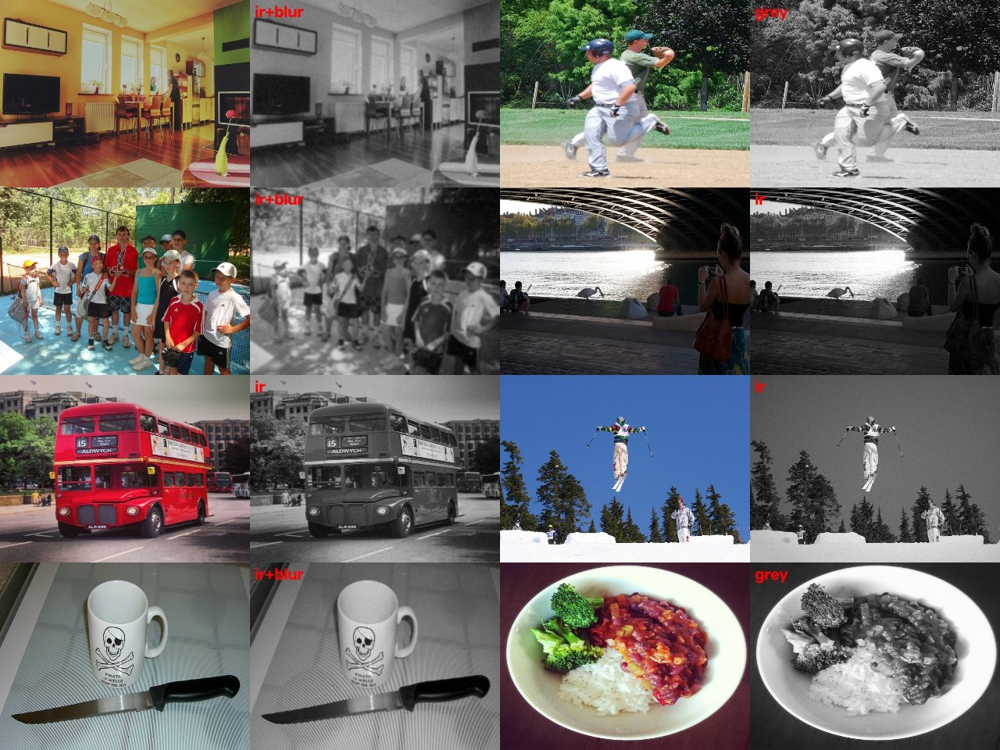
4.2 FALLPOSE — ให้โมเดลใหญ่ช่วยสร้างป้าย แล้วฝึกโมเดลเล็ก
Teacher คือ YOLO26x-pose ที่อ่านภาพ 1280 บนเครื่องพัฒนา ไม่ได้ส่งไปทำงานบน CPU จริง Student คือ YOLO26s-pose ขนาดเดิมที่ต้องใช้จริง Teacher ให้ข้อต่อ แต่ตรวจว่ากล่องของ teacher ตรงกับกรอบที่คนวาดใน CAUCAFall หรือไม่ด้วย IoU ซึ่งคือสัดส่วนพื้นที่ซ้อนทับหารพื้นที่รวมของสองกรอบ กำหนดอย่างน้อย 0.5 และต้องมีข้อต่อมั่นใจอย่างน้อย 8 จุดที่ confidence≥0.5 ข้อต่อที่ไม่มั่นใจถูกระบุว่ามองไม่เห็น ไม่เติมตำแหน่งเดาเข้าไป
CAUCAFall มี subject 10 คน แยก 1–8 เป็นฝึกและ 9–10 เป็นชุดตรวจ ไม่เอาภาพบุคคลเดียวกันข้ามสองชุด การเลือกเฟรมต่อกิจกรรมล้มใช้ก่อนล้ม 8 ภาพ ช่วงแรกของ class ล้มทุก 2 เฟรมสูงสุด 16 ภาพ และช่วงเหลืออีก 16 ภาพ กิจกรรมทั่วไปเช่นคุกเข่า ก้มเก็บของ นั่ง เดิน ใช้ 12 ภาพต่อกิจกรรม การสุ่มช่วงตกจึงประมาณ 10 fps จากต้นทาง 20 fps ซึ่งต่างจากข้อเสนอ 2 fps และยังต้องทดลองเปรียบเทียบความซ้ำซ้อน
รายงานเดิมระบุภาพฝึก 2,050 ภาพ นำมาซ้ำเพื่อให้เป็น 15% ของรายการฝึก ส่วนที่เหลือสุ่มจาก COCO และคงจำนวนรายการรวมเท่าตัวควบคุม จึงไม่ใช่การเพิ่มเวลาฝึกด้วยการต่อข้อมูลท้ายชุดเฉย ๆ validation สำหรับเลือก checkpoint ยังคงเป็น COCO ภาพสี ใช้ตาราง 2+8 epoch เช่น POSE-IR แต่ FALLPOSE ปิดการลดคุณภาพกลางคืน ฝึก s42/s43
URFD, owner Test และ GMDCSA validation ไม่ถูกนำมาสร้างป้ายฝึก FALLPOSE v1 ชุดนี้ การวัด teacher บน URFD half A เป็นการตรวจความเป็นไปได้ ไม่ใช่การนำเฟรมเหล่านั้นเข้าฝึก สิทธิ์ CAUCAFall ตามที่ Claude บันทึกว่าเป็น CC BY 4.0 และ teacher ใช้เงื่อนไข Ultralytics AGPL/Enterprise; รายงานนี้ไม่ได้ตรวจข้อกฎหมายใหม่
หลักฐาน: training/fallpose_build.py บรรทัด 14–26 · เครื่องมือ/คำสั่งเดิม: python training/fallpose_build.py · CAUCAFall 10 subject; split 1–8/9–10; ไม่มีการสร้างข้อมูลใหม่รอบนี้ · รายงานนี้อ่านผลเดิม ไม่ได้รันวัดใหม่
หลักฐาน: training/fallpose_build.py บรรทัด 99–129 · เครื่องมือ/คำสั่งเดิม: teacher.predict; IoU/keypoint filter · threshold predict 0.25 ใน implementation; เกณฑ์รับเข้าคือ IoU และข้อต่อ ไม่ใช่ proposal เดิมที่ระบุ box เกณฑ์คะแนนขั้นต่ำที่ยอมรับว่าพบคน 0.5 · รายงานนี้อ่านผลเดิม ไม่ได้รันวัดใหม่
หลักฐาน: training/fallpose_data.py บรรทัด 2–10 · เครื่องมือ/คำสั่งเดิม: SEED=42 python training/fallpose_data.py · ผสม 15% และคงจำนวน training draws · รายงานนี้อ่านผลเดิม ไม่ได้รันวัดใหม่
หลักฐาน: AI_HANDOFF.md บรรทัด 2080–2094 · เครื่องมือ/คำสั่งเดิม: บันทึก licence และ audit · อ้างสิทธิ์ตามบันทึกเท่านั้น · รายงานนี้อ่านผลเดิม ไม่ได้รันวัดใหม่
4.3 FALLNIGHT — ข้อมูลคนนอนบวกการจำลองภาพกลางคืน
ใช้รายการผสม FALLPOSE เดิม โดยเปิด CONTROL=0 ในตัวฝึก POSE-IR จึงมีทั้งภาพคนล้ม/นอนและการทำเทา/ภาพกลางคืนแบบอินฟราเรด/blur ตั้ง RUN_NAME=fallnight_s42, หมายเลขกำหนดการสุ่ม 42, ภาพ 320 และตารางฝึกเดิม ไม่ใช่การนำผลคะแนนของสองโมเดลมาเฉลี่ย
ผล s42 เป็น screen เบื้องต้น: เห็นคนนอนกลางคืนเพิ่ม แต่ IR0/ALT0 เตือนผิด 5/6 จาก 40 และ COCO ต่ำกว่า floor รุ่น s43 มีบันทึกเริ่มฝึก แต่รายงานนี้ไม่มีผลเต็มให้ยืนยันการทำซ้ำ
หลักฐาน: training/fallnight_queue.sh บรรทัด 2–12 · เครื่องมือ/คำสั่งเดิม: CONTROL=0 SEED=42 WORKERS=2 RUN_NAME=fallnight_s42 COCO_POSE_YAML=.../fallpose_mix_s42.yaml python training/finetune_pose_ir.py · สคริปต์คิวเดิม ไม่ได้เรียกในรอบนี้ · รายงานนี้อ่านผลเดิม ไม่ได้รันวัดใหม่
4.4 E2 — ฝึกตัวตัดสินใหม่หลาย หมายเลขกำหนดการสุ่ม แล้วรวมผล
E2 เป็น ensemble หรือการใช้ classifier หลายตัวร่วมกัน สมาชิก หมายเลขกำหนดการสุ่ม 45/46/47 ถูกกำหนดก่อนผลครบ ต่างจาก E1 ซึ่งเป็นผลเลือกภายหลัง ใช้ recipe A ที่แยกข้อมูลแบบ group ลดการเอาช่วงจากวิดีโอต้นทางเดียวกันข้าม train/validation และใช้ข้อมูลข้อต่อจาก GMDCSA24, FallVision, CAUCAFall และ OF-ItW แหล่งเหล่านี้ต่างวิธีเก็บและต่างคุณภาพป้าย จึงไม่ควรอ้างว่าทั้งหมดเป็นป้ายที่คนตรวจทุกเฟรม
ค่าที่บันทึกใน recipe ของ s45: SPLIT=group, EXCLUDE_NO_TIMEBASE=1, WINDOW_STEP=2, TEMPORAL_STRIDE=2, BALANCED_SAMPLING=1, RESAMPLE_FPS=0, RUNTIME_MISSES=1 หมายถึงแยกเป็นกลุ่ม ตัดไฟล์ไม่ทราบฐานเวลา เลื่อนหน้าต่างข้อมูล และจำลองการพลาดตรวจคนตาม runtime ค่านี้เป็นของ E2 เดิม อย่าสับสนกับ CLS-ADAPT ที่เสนอ resample เป็น 8 fps ภายหลัง
ตัวอย่างขนาดข้อมูลที่มี log ชัดของ หมายเลขกำหนดการสุ่ม 45: โหลด 9,607 วิดีโอ ตัด held-out 16 ไฟล์ เหลือ train 7,743/validation 1,848 มีหน้าต่าง train 124,493/validation 31,952; log รันถึง epoch 60 และเลือก best validation F1 0.582 ตัวเลข F1 นี้เป็นระดับหน้าต่างของงานฝึก ไม่ใช่ recall ต่อเหตุการณ์หรือผลใช้งานจริง ไม่ยกตัวเลขนี้แทนคะแนน fall/FA ในตารางผล
ส่งออก classifier เป็น ONNX เพื่อเรียกใช้งาน จากนั้นเลือก threshold ด้วย half A ตามกติกาเดียวกัน E2 บน stock pose ได้ 0.50 แต่เมื่อใช้ pose ใหม่ threshold อาจเปลี่ยนเป็น 0.65 หรือ 0.70 จึงต้องรายงานทั้งโมเดล pose และ classifier คู่กัน การรวม E2 ไม่ได้แก้ภาพท่าทางที่ไม่เคยถูกตรวจพบ
หลักฐาน: training/e2_resume.sh บรรทัด 2–9 · เครื่องมือ/คำสั่งเดิม: RESAMPLE_FPS=0 TEMPORAL_STRIDE=2 EXCLUDE_NO_TIMEBASE=1 sh training/stage1_ablate.sh abl_A SEED · E2 หมายเลขกำหนดการสุ่ม 45/46/47; script resume แสดง 46/47 ต่อจาก 45 · รายงานนี้อ่านผลเดิม ไม่ได้รันวัดใหม่
หลักฐาน: training/stage1_ablate.sh บรรทัด 9–15 · เครื่องมือ/คำสั่งเดิม: python train.py; python training/export_onnx.py; python training/measure/stage1_eval.py · runner ของการฝึก/ส่งออก/วัดเดิม · รายงานนี้อ่านผลเดิม ไม่ได้รันวัดใหม่
หลักฐาน: training/data/stage1/abl_A_s45/recipe.env บรรทัด 1–7 · เครื่องมือ/คำสั่งเดิม: recipe.env ที่เก็บตอนฝึก · ค่าจริงของ s45 · รายงานนี้อ่านผลเดิม ไม่ได้รันวัดใหม่
หลักฐาน: training/data/stage1/abl_A_s45/train.log บรรทัด 1–13 · เครื่องมือ/คำสั่งเดิม: training/train.py ผ่าน stage1_ablate.sh · ขนาดข้อมูลเฉพาะ s45; ดูบรรทัด 78–81 สำหรับ epoch 60 และ best F1 · รายงานนี้อ่านผลเดิม ไม่ได้รันวัดใหม่
สิ่งที่ยังเป็นแผน ไม่ใช่โมเดลฝึกเสร็จ
CLS-ADAPT จะเปรียบเทียบมี/ไม่มีคลิปสังเคราะห์ที่ผ่าน audit ส่วน TRUNC-v1 จะเปรียบเทียบมี/ไม่มีการซ่อนข้อต่อ ทั้งสองต้องมีตัวควบคุมและ หมายเลขกำหนดการสุ่ม ที่จับคู่กัน ยังไม่มีผลวัดใหม่ให้บอกว่าช่วยได้ การสกัดข้อต่อประมาณ 400 คลิปก่อนหยุดงานไม่เท่ากับฝึกโมเดลเสร็จ
หลักฐาน: AI_HANDOFF.md บรรทัด 2479–2487 · เครื่องมือ/คำสั่งเดิม: คำสั่งหยุดทุกงาน 12:10 · สถานะก่อนเริ่มรายงานวันที่ 2 · รายงานนี้อ่านผลเดิม ไม่ได้รันวัดใหม่
5. ทดสอบอย่างไร และตัวเลขหมายความว่าอะไร
แยกสิ่งที่กำลังวัด
Recall / จับได้ คือจำนวนคลิปหรือช่วงที่มีการล้มแล้วเกิด alert FA (false alarm) คือคลิปกิจกรรมปกติที่กลับมี alert ADL ย่อจากกิจวัตรทั่วไป เช่น นั่ง เดิน หรือนอนเอง ช่อง ADL clean นับคลิปที่ไม่เตือนผิด จึงยิ่งมากยิ่งดี ส่วน FA ยิ่งน้อยยิ่งดี ตัวเลขเหล่านี้ไม่ใช่จำนวนข้อความแจ้งเตือนทั้งหมดหรือ FA ต่อชั่วโมง
Presence คือสัดส่วนเฟรมที่ตรวจพบคนระหว่างช่วงที่กำหนด แยก descent (ช่วงตก) และ after (หลังตก 2 วินาที) คนที่มีโครงร่างครบขึ้นอาจยังถูก classifier ตัดสินผิดได้ จึงต้องดู presence ควบคู่กับผลแจ้งเตือน
URFD: แยกกลุ่มเลือกเกณฑ์ออกจากกลุ่มตรวจ
URFD เป็นชุดคลิปการล้มที่ใช้เทียบผล มี falls 60 และกิจกรรมปกติ 40 ใช้ half A เลือก threshold แล้วตรวจ half B โดยจัดคู่กล้องของเหตุเดียวกันไว้ข้างเดียวด้วย ((index-1)//2)%2 ไม่แยกเลขคี่/คู่ตรง ๆ half B ในตารางมี falls 28 และ ADL 20; GMDCSA validation ADL อีก 16 เป็นคอลัมน์ต่างหาก ไม่รวมปนเป็นตัวหารเดียว
การวัด presence ใช้ป้ายผู้จัดทำ URFD cam0: -1 ยังไม่นอน, 0 กำลังตก, 1 นอนแล้ว ตรวจจำนวนเฟรมตรงกับไฟล์ cam0 30 คลิป แต่ช่วงตกทุกคลิปกว้าง 30 เฟรมเท่ากัน จึงเป็น annotation กำหนดความยาว ไม่ใช่การวัดเวลาตกจริงอย่างละเอียด cam1 ไม่มีป้ายและไม่ซิงก์ จึงไม่เอาป้าย cam0 ไปใช้ตรง ๆ
ไม่ได้ใช้ URFD ฝึกน้ำหนักโมเดล แต่มีการใช้ half A เลือก threshold และดูผลซ้ำระหว่างพัฒนา จึงไม่อ้างว่าการยืนยัน N1 หลัง screen เป็น holdout ที่ไม่มีใครเคยเห็นเลย
หลักฐาน: AI_HANDOFF.md บรรทัด 2016–2034 · เครื่องมือ/คำสั่งเดิม: python training/measure/fall_presence.py · URFD author labels cam0; 30 clips checked · รายงานนี้อ่านผลเดิม ไม่ได้รันวัดใหม่
หลักฐาน: training/measure/stage1_eval_pinned.py บรรทัด 2–12 · เครื่องมือ/คำสั่งเดิม: python training/measure/stage1_eval_pinned.py --name NAME --model DIR --pose TAG --day C1 ... C8 --ir I1 I2 I3 --owner O1 ... O8 [--fixed 0.65] · รูปแบบคำสั่งจาก header; ต้องใช้ path จริงจาก cache lists · รายงานนี้อ่านผลเดิม ไม่ได้รันวัดใหม่
กลางคืนจำลอง: อย่าสับสน training หมายเลขกำหนดการสุ่ม กับ noise หมายเลขกำหนดการสุ่ม
หมายเลขกำหนดการสุ่ม 42/43/44 คือการสุ่มตอนฝึกโมเดล ส่วน 0/7/13 คือการสุ่ม noise ตอนทำชุดประเมิน ภาพกลางคืนแบบอินฟราเรด ดังนั้น “วัดกลางคืน 3 ครั้ง” ในตารางหลักหมายถึง ภาพกลางคืนแบบอินฟราเรด แบบเดียวที่สุ่มจุดรบกวนต่างกัน ไม่ใช่กล้องจริงสามตัว NIGHT_ALT เป็นวิธีทำภาพกลางคืนอีกแบบที่ใช้ตรวจว่าโมเดลได้ประโยชน์เฉพาะ simulator ที่คล้ายการฝึกหรือไม่ screen ภาพกลางคืนจำลองอีกวิธีหนึ่ง บางรุ่นมีแค่ หมายเลขกำหนดการสุ่ม 0 จึงไม่อ้างว่าผ่านผลเต็มทั้งหมด คลิป owner ที่เป็นคืนจริงมี 7 ช่วงสั้น ๆ ตามบันทึกภายหลัง แก้ความเข้าใจเก่าใน Current state ที่บอกว่าไม่มีเลย แต่ยังไม่พอเป็นชุดรับรองกลางคืนจริง
หลักฐาน: AI_HANDOFF.md บรรทัด 2232–2254 · เครื่องมือ/คำสั่งเดิม: python training/measure/pose_screen_report.py · แยก ภาพกลางคืนแบบอินฟราเรด และ NIGHT_ALT screen · รายงานนี้อ่านผลเดิม ไม่ได้รันวัดใหม่
หลักฐาน: AI_HANDOFF.md บรรทัด 2310–2321 · เครื่องมือ/คำสั่งเดิม: overnight report fact-check · แก้ข้อเท็จจริงเรื่อง 7 real-night owner segments · รายงานนี้อ่านผลเดิม ไม่ได้รันวัดใหม่
owner: 126 ช่วง × 8 รอบ ไม่ใช่เหตุการณ์อิสระเพิ่มแปดเท่า
ตัดวิดีโอ owner เป็น 126 ช่วง replay 8 phase ซึ่งเป็นการเลื่อนจังหวะ runtime/บริเวณภาพรอบคนที่ติดตาม ที่เริ่มอ่าน ไม่ใช่ข้อมูลคนใหม่ ในคะแนนเดิมมี 75 ช่วงล้ม, 13 ช่วง negative และกลุ่มหลายคน 25 ช่วง; อย่าสมมติว่าตัวหารเหล่านี้รวมกันเท่าทั้ง 126 โดยไม่ดู manifest ทศนิยมในตารางคือค่าเฉลี่ยข้าม phase และควรดูค่าต่ำสุดด้วย ชุด owner ถูกใช้เทียบตัวเลือกซ้ำ จึงเป็นชุดช่วยพัฒนา ไม่ใช่ heldout อิสระที่พร้อมรับรอง deployment
กลุ่มหลายคนแบบสะอาดที่เสนอมี 17 IDs: ผู้ล้มเป็นผู้ใหญ่ กล้องประจำที่ในบริบทที่พักอาศัย รวมระเบียง/หน้าบ้าน และมีอีกคนในภาพ เด็กกับกล้องมือถือแยกออก กลุ่ม /25 เดิมยังเก็บเป็นคอลัมน์ประวัติ ต้องตรวจว่า alert เป็นของผู้ล้มจริง ไม่ใช่เพียงคนอื่นในฉาก และต้องแยกผลที่มนุษย์ตัดสินป้ายแล้วจากผลชั่วคราว
หลักฐาน: AI_HANDOFF.md บรรทัด 1914–1924 · เครื่องมือ/คำสั่งเดิม: MULTI-DIAG-v2 design · 17 provisional IDs; retain /25 historical; attribution required · รายงานนี้อ่านผลเดิม ไม่ได้รันวัดใหม่
หลักฐาน: training/data/stage1/results_pinned.jsonl บรรทัด 1–9 · เครื่องมือ/คำสั่งเดิม: stage1_eval_pinned.py → replay_owner_segments.py → score_incidents.py · 8 owner results ต่อแถว; duplicate ยังอยู่ใน /75 · รายงานนี้อ่านผลเดิม ไม่ได้รันวัดใหม่
เกณฑ์ที่ตั้งก่อนอ่านผลเต็ม
| รายการ | เกณฑ์ Stage-1 ที่ใช้กับ F1/F2/N1/N2 | ความหมาย |
|---|---|---|
| URFD half-B จับล้ม | ≥21.8 /28 | รักษาการจับได้ |
| half-B ADL clean | ≥16.1 /20 | จำกัดการเตือนผิดกลางวัน |
| GMDCSA val ADL clean | ≥6.1 /16 | ตรวจ negative อีกแหล่ง |
| ภาพกลางคืนแบบอินฟราเรด FA เฉลี่ย | ≤13/3 หรือประมาณ 4.33 /40 | รวม 3 noise หมายเลขกำหนดการสุ่ม ต้องไม่เกิน 13; ไม่ตัดสินจากเลขปัดเศษ |
| owner FA เฉลี่ย | ≤5 /13 | เพดาน Stage-1 ไม่ใช่กฎ zero-new-FA ของ tracker |
| เพิ่มเติมสำหรับ pose | COCO≥0.4965; after-presence half B เพิ่ม≥5 จุดร้อยละ | ไม่รวมปนกับคำว่า operating gates |
| ความเร็ว | ต้องวัด CPU; pose pass เทียบ≤105% | ยังต้องวัด full pipeline และอัตราต่อเนื่องจริง |
F1/F2 ลงทะเบียนก่อนผลเต็ม 8 phase; F3 เป็น post hoc คือเลือกหลังเห็นข้อมูล จึงไม่ใช่หลักฐานยืนยันเพิ่ม N1/N2 ลงทะเบียน 07:20 หลัง screen 05:25 แต่ก่อนผลเต็ม เป็นการยืนยันตามแผนถัดไป ไม่ใช่การทดสอบที่ไม่เคยเห็นแนวโน้ม ส่วน s43 ลงทะเบียน 07:32 และ s44 08:20 การผ่าน subset ใดไม่ลบข้อที่ตก เช่น COCO, FA หรือการตรวจโค้ดที่ยังค้าง
หลักฐาน: AI_HANDOFF.md บรรทัด 2195–2210 · เครื่องมือ/คำสั่งเดิม: F1/F2 pre-registration · แยก Stage-1 กับ pose/CPU gates · รายงานนี้อ่านผลเดิม ไม่ได้รันวัดใหม่
หลักฐาน: AI_HANDOFF.md บรรทัด 2282–2308 · เครื่องมือ/คำสั่งเดิม: N1/N2 pre-registration + Codex N1 review · prospective confirmation หลัง screen · รายงานนี้อ่านผลเดิม ไม่ได้รันวัดใหม่
ความเร็วและการทดสอบที่ยังไม่เกิด
ผล CPU ที่มีเป็น pose pass สลับโมเดลบนภาพเดียวกัน 72 ภาพวน 2 รอบ, 4 threads, full frame 320 ขณะเครื่องยุ่ง p95 หมายถึงค่าที่การวัดส่วนใหญ่ 95% ไม่เกินนี้ ยังไม่ใช่เวลา decode→preprocess→บริเวณภาพรอบคนที่ติดตาม→track→classifier→alert ของทุกกล้อง ต้องวัดบนเซิร์ฟเวอร์ CPU จริงพร้อมจำนวนกล้องที่ต้องใช้และตรวจ backlog หรือภาพค้างสะสม การดูวิดีโอ replay ไม่แทน live test
หลักฐาน: training/data/multi_diag_v2/pose_latency_paired.txt บรรทัด 1–3 · เครื่องมือ/คำสั่งเดิม: python training/measure/pose_latency_paired.py · ผลเฉพาะ pose ไม่รวม FALLNIGHT/E2 pipeline · รายงานนี้อ่านผลเดิม ไม่ได้รันวัดใหม่
6. ผลรวม กราฟ และตัวอย่างภาพ/คลิป
ผลเต็มที่ตรึงรายการ cache
ตารางนี้ถอดค่าจาก results_pinned.jsonl โดยตรง ค่าเฉลี่ย owner คำนวณจากรายการ 8 รอบและปัดทศนิยมตามที่แสดง แต่ละคอลัมน์มีตัวหารของตนเอง ชื่อ F/N เป็นชื่อแขนทดลอง ไม่ใช่รุ่นที่อนุมัติใช้จริง
| แขนทดลอง | threshold | half-B falls /28 | ADL clean /20 | val ADL clean /16 | ภาพกลางคืนแบบอินฟราเรด falls /60 หมายเลขกำหนดการสุ่ม 0,7,13 | ภาพกลางคืนแบบอินฟราเรด FA /40 หมายเลขกำหนดการสุ่ม 0,7,13 | owner caught /75 | owner FA /13 | multi /25 | คำตัดสิน |
|---|---|---|---|---|---|---|---|---|---|---|
| ตัวใช้อยู่ / parity | 0.65 | 21.8 | 17.1 | 7.1 | 17, 16, 20 | 4, 3, 3 | 33.8 | 1.75 | 10.9 | ตัวเทียบ |
| F1 FALLPOSE s42 + classifier เดิม | 0.65 | 22.4 | 14.9 | 7.8 | 26, 20, 27 | 3, 1, 4 | 42.8 | 2.38 | 13.5 | ตก ADL; COCO ต่ำ; ภาพกลางคืนจำลองอีกวิธีหนึ่ง FA สูง |
| F2 FALLPOSE s42 + E2 ตาม rule | 0.65 | 21.6 | 14.6 | 9.9 | 27, 21, 27 | 8, 8, 8 | 44.4 | 1.50 | 15.9 | ตก half B, ADL, ภาพกลางคืนแบบอินฟราเรด FA; COCO ต่ำ |
| F3 FALLPOSE + E2 fixed (post hoc) | 0.65 | 21.6 | 14.6 | 9.9 | 27, 21, 27 | 8, 8, 8 | 44.4 | 1.50 | 15.9 | ผลเท่า F2; ไม่ใช่การยืนยันเพิ่ม |
| N1 POSE-IR s42 + classifier เดิม | 0.65 | 22.2 | 18.0 | 7.4 | 38, 39, 33 | 3, 4, 6 | 40.1 | 2.50 | 15.1 | ผ่าน operating gates; COCO ต่ำ |
| N2 POSE-IR s42 + E2 | 0.65 | 21.8 | 18.0 | 10.2 | 31, 33, 32 | 7, 2, 4 | 39.0 | 1.75 | 17.9 | ผ่าน operating gates; COCO ต่ำ |
| N1 POSE-IR s43 + classifier เดิม | 0.65 | 23.6 | 17.5 | 7.2 | 42, 41, 42 | 3, 5, 6 | 41.0 | 2.25 | 15.6 | ภาพกลางคืนแบบอินฟราเรด FA รวม 14 เกิน 13; COCO ต่ำ |
| N2 POSE-IR s43 + E2 | 0.70 | 19.0 | 18.2 | 10.9 | 28, 32, 34 | 13, 12, 13 | 37.4 | 1.25 | 16.4 | ตก half B และ ภาพกลางคืนแบบอินฟราเรด FA; COCO ต่ำ |
| N1 POSE-IR s44 + classifier เดิม | 0.65 | 22.8 | 16.9 | 7.9 | 39, 42, 35 | 8, 5, 4 | 42.1 | 2.38 | 15.0 | ภาพกลางคืนแบบอินฟราเรด FA รวม 17 เกิน 13; COCO ผ่าน |
หลักฐาน: training/data/stage1/results_pinned.jsonl บรรทัด 1–9 · เครื่องมือ/คำสั่งเดิม: python training/measure/stage1_eval_pinned.py · 8 day/owner phase; 3 ภาพกลางคืนแบบอินฟราเรด หมายเลขกำหนดการสุ่ม ต่อแถว; ไม่ใช่ผล live · รายงานนี้อ่านผลเดิม ไม่ได้รันวัดใหม่
ไม่มีแถวใดได้รับอนุมัติ deploy จากตารางนี้ N1/N2 s42 ที่ผ่านเฉพาะ operating gates ยังมี COCO และข้อยืนยันอื่นค้าง F1 ที่บอกว่าตกหนึ่งข้อหมายถึงชุด operating gates เดิมเท่านั้น ไม่ได้ลบ COCO/ภาพกลางคืนจำลองอีกวิธีหนึ่ง หรือกฎ zero-new-negative ของการทดลองอื่น
E2 บน stock pose และการเทียบที่งบเตือนผิดเท่ากัน
| โมเดล | threshold ตาม half A | half-B falls /28 | ADL clean /20 | val clean /16 | ภาพกลางคืนแบบอินฟราเรด falls /60 | ภาพกลางคืนแบบอินฟราเรด FA /40 | owner caught /75 | FA /13 | multi /25 |
|---|---|---|---|---|---|---|---|---|---|
| ตัวเดิม | 0.65 | 21.8 | 17.1 | 7.1 | 17,16,20 | 4,3,3 | 33.8 | 1.75 | 10.9 |
| E1 (post hoc) | 0.55 | 24.0 | 16.6 | 10.0 | 27,34,26 | 4,3,4 | 47.9 | 2.88 | 17.8 |
| E2 (สมาชิกกำหนดก่อน) | 0.50 | 25.0 | 16.4 | 9.0 | 30,30,25 | 7,8,13 | 49.2 | 3.12 | 20.0 |
| โมเดล | day falls /60 ที่ FA≤3 (threshold) | day falls /60 ที่ FA≤6 (threshold) | ภาพกลางคืนแบบอินฟราเรด falls เฉลี่ย /60 ที่ FA≤4 (threshold) |
|---|---|---|---|
| ตัวเดิม | 25 (0.85) | 51 (0.50) | 20.3 (0.60) |
| E1 post hoc | 38 (0.75) | 50 (0.60) | 29.0 (0.55) |
| E2 | 41 (0.65) | 50 (0.50) | 21.3 (0.60) |
ตาราง matched-FA เป็นคนละเงื่อนไขกับ frozen half-A rule อย่าเอาแถวดีที่สุดแต่ละตารางมารวมเป็นโมเดลเดียว MediaPipe รุ่นก่อนมีตัวเลข owner 44/75, FA 5/13, multi 16/25 จากรอบเดียวตามรายงานเดิม จึงไม่เทียบเป็นการยืนยันหลาย phase
หลักฐาน: AI_HANDOFF.md บรรทัด 2121–2160 · เครื่องมือ/คำสั่งเดิม: stage1_eval.py; stage1_matched.py · E1/E2/deployed; ตัวเลข E2 เป็นบันทึกเดิม ไม่ได้คำนวณจาก pinned rows · รายงานนี้อ่านผลเดิม ไม่ได้รันวัดใหม่
ใกล้–กลาง–ไกล: ตาราง v4t ใช้บรรยายเท่านั้น
ตัวเลขคือค่าเฉลี่ยจำนวนช่วงที่จับได้จาก 8 phase; วงเล็บคือค่าต่ำสุดใน 8 phase กลุ่มขนาดมาจาก stock pose proxy ตามวิธี v4 ไม่ใช่การวัดระยะกล้องจริง กลุ่ม multi17 เป็นอีกมุมมองหนึ่งที่ซ้อนกับกลุ่มระยะ จึงห้ามบวกเป็นจำนวนเหตุการณ์เพิ่ม
| โมเดล | far /24 | medium /24 | near /25 | unknown /2 | multi17 /17 |
|---|---|---|---|---|---|
| ตัวใช้อยู่ / parity | 12.4 (10) | 12.2 (11) | 9.1 ( 8) | 0.0 ( 0) | 8.5 ( 7) |
| N1 POSE-IR s42 + classifier เดิม | 15.9 (14) | 12.6 (11) | 10.6 ( 8) | 1.0 ( 1) | 10.8 ( 9) |
| N1 POSE-IR s43 + classifier เดิม | 13.9 (12) | 14.2 (12) | 11.9 (10) | 1.0 ( 1) | 11.4 (10) |
| N1 POSE-IR s44 + classifier เดิม | 14.2 (12) | 13.1 (12) | 13.8 (11) | 1.0 ( 1) | 10.6 ( 9) |
| F1 FALLPOSE s42 + classifier เดิม | 14.1 (13) | 15.8 (13) | 12.9 (11) | 0.0 ( 0) | 9.5 ( 8) |
| F2 FALLPOSE s42 + E2 ตาม rule | 15.8 (14) | 16.8 (14) | 11.9 (10) | 0.0 ( 0) | 11.6 (10) |
| N2 POSE-IR s42 + E2 | 14.1 (13) | 13.1 (11) | 11.8 (10) | 0.0 ( 0) | 12.0 (10) |
หลักฐาน: training/data/day_first/table_v4t.txt บรรทัด 1–8 · เครื่องมือ/คำสั่งเดิม: python training/measure/day_first_table.py · 75 รายการเดิม ยังมีคู่ซ้ำ 1#3/8#5; ไม่ใช่ promotion gate · รายงานนี้อ่านผลเดิม ไม่ได้รันวัดใหม่
กราฟเดิม: ผล screen ไม่ใช่ผลครบทุก หมายเลขกำหนดการสุ่ม
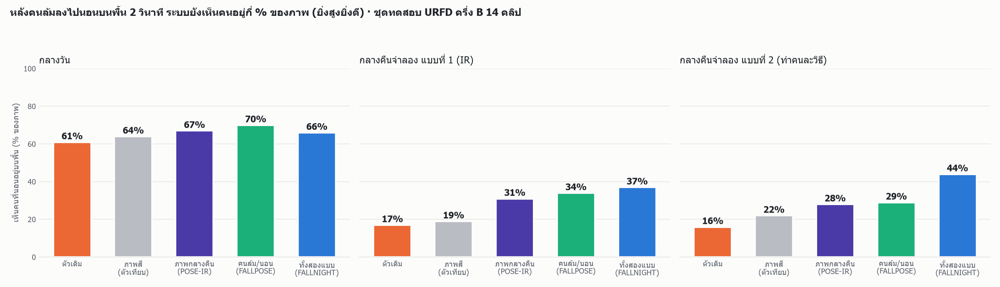
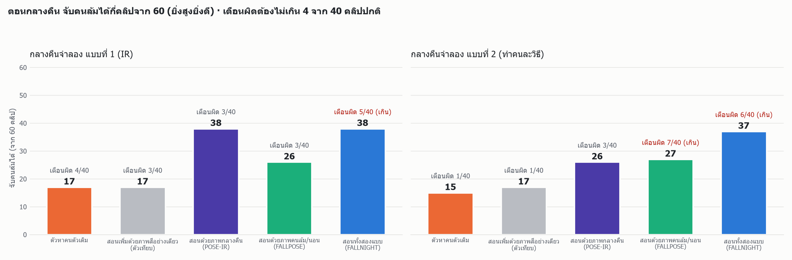
หลักฐาน: training/data/multi_diag_v2/pose_screen_0500.txt บรรทัด 1–42 · เครื่องมือ/คำสั่งเดิม: python training/measure/pose_screen_report.py · screen ของ stock/colour/nightaug/fallpose/noise; FALLNIGHT จาก handoff 06:23 · รายงานนี้อ่านผลเดิม ไม่ได้รันวัดใหม่
ภาพอาการและข้อมูลฝึก
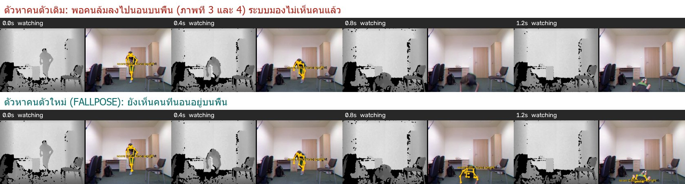
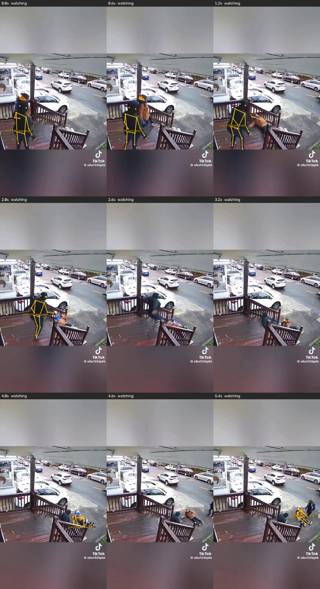
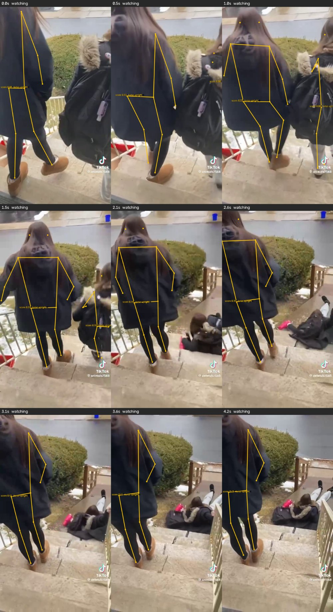
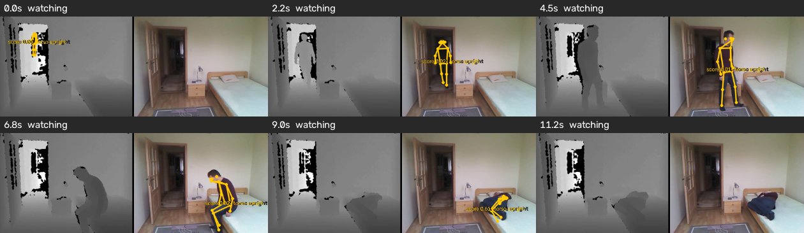
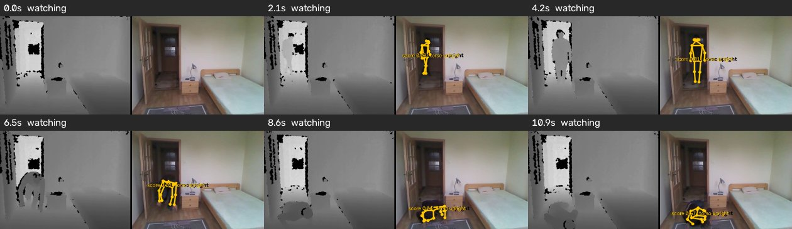
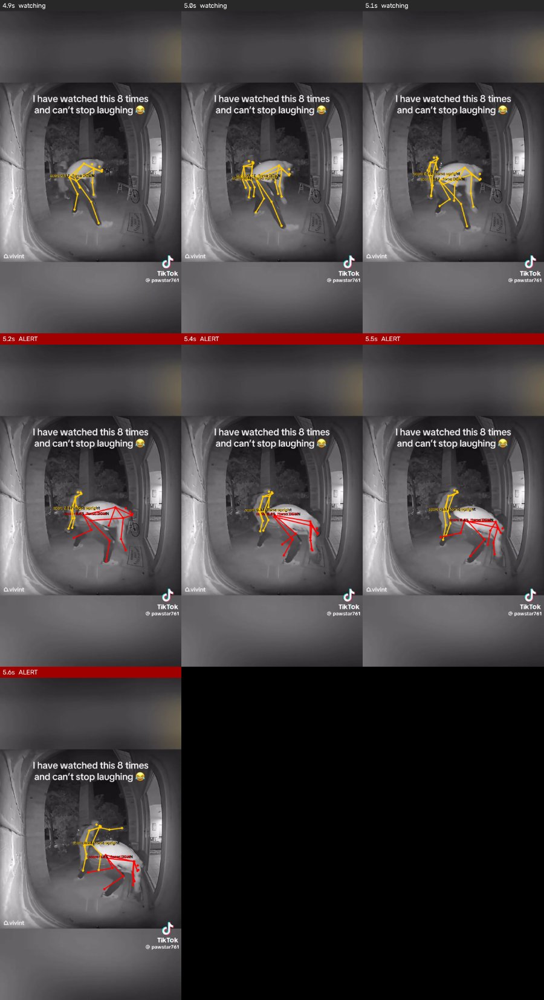
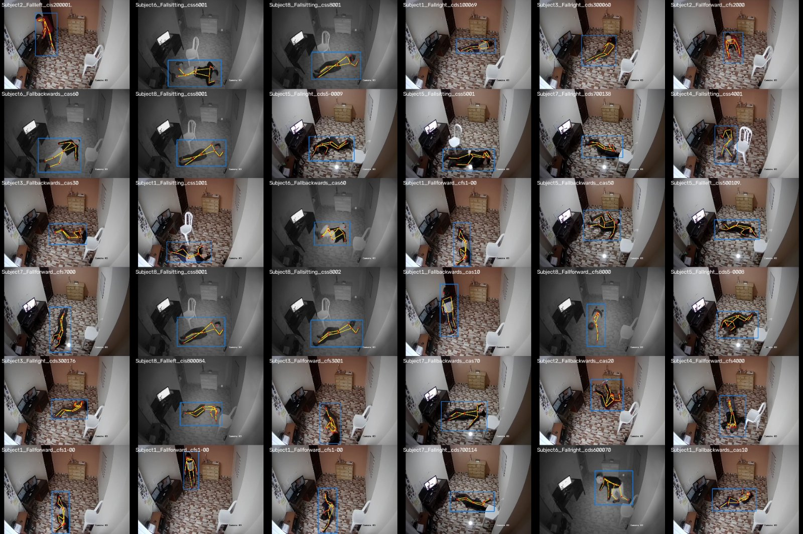
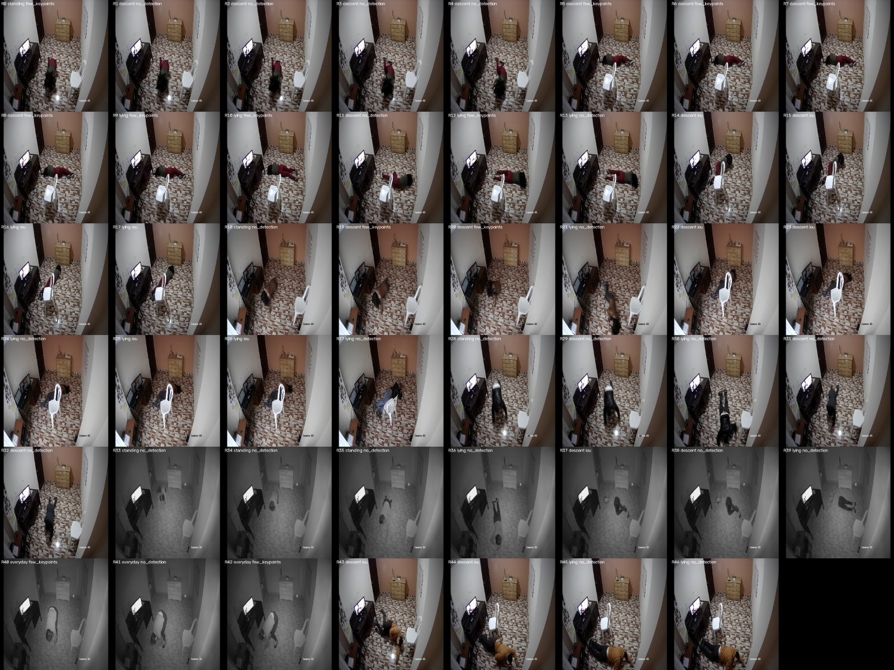
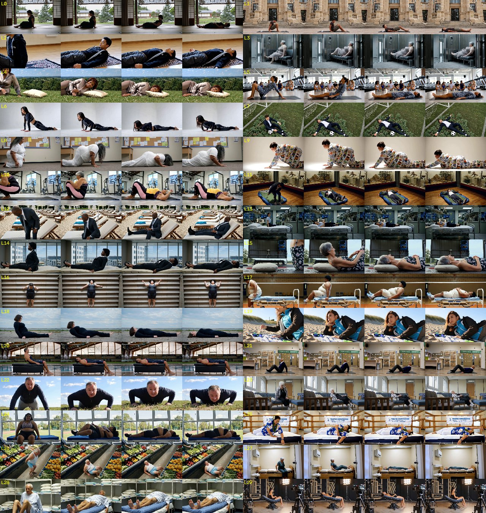
หลักฐาน: AI_HANDOFF.md บรรทัด 2183–2189 · เครื่องมือ/คำสั่งเดิม: FALLPOSE owner screen; fa_8_3.png · 2 phase screen ก่อนผลเต็ม · รายงานนี้อ่านผลเดิม ไม่ได้รันวัดใหม่
หลักฐาน: AI_HANDOFF.md บรรทัด 2268–2271 · เครื่องมือ/คำสั่งเดิม: บันทึกเลือกภาพประกอบ · ภาพ night before/after ที่ skeleton ไปอยู่บนกระเป๋าถูกตัดออก ไม่ใช้แทนข้อสรุปเชิงปริมาณ · รายงานนี้อ่านผลเดิม ไม่ได้รันวัดใหม่
คลิปเปรียบเทียบเดิม
ไฟล์สาธิตที่เจ้าของระบุ ด้านซ้ายและขวาให้ดูชื่อกำกับในคลิป การแจ้งเตือนในตัวอย่างไม่รับรองผลทั้งชุด ไม่มีการสร้าง inference หรือ encode คลิปใหม่ในรอบนี้
รอบนี้ตรวจด้วย OpenCV ว่าไฟล์ทั้งสามเปิดอ่านเฟรมแรกได้และ codec เป็น H.264 ยังไม่ได้ทดลองเล่นในเบราว์เซอร์จริงหรือดูวิดีโอครบทุกเฟรม คำบรรยายผลสองคลิปแรกยึด report_overnight.html บรรทัด 183–187
7. ทีมทำงานร่วมกันอย่างไร และส่วนไหนยังไม่จบ
กติกาหลักคือเป็นทีมเดียวกัน แบ่งหน้าที่ตามงานแต่รับผิดชอบผลร่วมกัน Claude ประสานงานและทำการทดลอง, Codex ออกแบบเกณฑ์และตรวจความเสี่ยง, Gemini ช่วยค้นข้อมูลและตรวจภาพเมื่อพิสูจน์แล้วว่าเครื่องมือดูภาพได้ เจ้าของยืดหยุ่นบทบาทได้ รอบนี้สั่งให้ Codex เขียนรายงานเพราะโควตา Claude ใกล้หมด
| เรื่อง | ความเห็น / การทำงานร่วมกัน | สถานะ ณ จุดตัดรายงาน |
|---|---|---|
| Tracker re-association | Codex ออกแบบและเขียน tests; Claude ทดลอง replay | ผลตกเกณฑ์ ไม่เปิดใช้ แม้ synthetic tests ผ่าน |
| FALLPOSE / POSE-IR | Claude ฝึก/วัด; Codex ตรวจ gates และข้อจำกัด; Gemini ตรวจภาพแต่มี viewing doubt | ยังไม่อนุมัติ deploy; audit ภาพบางส่วนยังต้องมนุษย์ตัดสิน |
| คำอธิบาย lie-down FA | Claude เสนอว่า classifier ไม่ชิน pose ใหม่; Codex ขอ matched retraining | เป็นสมมติฐาน ไม่ใช่เหตุยืนยัน |
| แบ่ง near/far v4 | Claude เปลี่ยน proxy; Codex ให้ใช้ descriptive; Gemini เห็นด้วย | ตกลงใช้สำรวจเท่านั้น ไม่เป็น promotion gate |
| OF-Syn | ทั้งสองคนต้องรับรองทุกคลิป; เห็นต่างคัดออก | เห็นชอบหลักการ แต่ยังตรวจไม่ครบ |
| TRUNC progressive | Gemini เสนอการหายต่อเนื่อง; Codex ระบุพารามิเตอร์ชัด | ยังรอ Gemini ตอบพารามิเตอร์สุดท้าย ไม่มีผลฝึก |
| โค้ดข้ามคืน | Claude แจ้งรายการที่ยังไม่ผ่าน review; Codex เริ่มตรวจ | ถูกหยุดกลางทาง: ยังไม่ได้ตรวจโค้ดจนจบ |
| รายงานวันที่ 2 นี้ | Codex เรียบเรียงตามคำสั่งที่บันทึกไว้ | ยังรอ Claude ตรวจตัวเลขและ Gemini ตรวจความอ่านง่าย ไม่อ้างว่าทั้งสองอ่านแล้ว |
กฎที่ตกลงล่าสุด: ก่อนเริ่มงานใหม่ต้องลง handoff และแจ้งให้เพื่อนทั้งสองรู้ งานเชิงกลที่อยู่ในแผนตกลงแล้วบันทึกการทำงานได้เลย แต่การตัดสินใจใหม่ไม่ทำเงียบ ๆ ถ้าขัดกันให้ส่งกลับไปคุย ไม่ตัดสินด้วยเสียงส่วนมาก หากยังไม่ตรงหลังสองรอบให้ใช้การวัดหรือให้เจ้าของตัดสิน
โค้ดที่ยังไม่มี review ห้ามยกระดับเป็นตัวเลขที่รับรองแล้ว ความเห็นต่อภาพไม่ใช่ ground truth และการเขียนใน handoff ไม่ได้แปลว่าส่งถึงแชตที่หยุดอยู่หรือผู้รับอ่านแล้ว ความปลอดภัยเรื่องสิทธิ์สื่อและข้อมูลส่วนตัวต้องรักษาตามกติกาเดิม
ประเด็นที่ผู้เขียนไม่เห็นด้วยกับข้อความเก่าอย่างชัดเจน: ไม่เรียก D1 ว่าผ่านต้นทุนครบเมื่อ p95 เกินเกณฑ์; ไม่เรียก POSE-IR ว่าผ่านทุกเกณฑ์หรือพร้อมใช้; ไม่เรียกการถอน flag ของ Gemini ว่า audit ปิดแล้ว; ไม่เรียก near/far ที่แก้ภายหลังว่า pre-registered การวัดที่ใช้ตัดสินแต่ละเรื่องคือ cost screen แบบจับคู่บนเครื่องว่าง, full gates ทุก หมายเลขกำหนดการสุ่ม, owner adjudication ภาพ และ manifest ระยะ/เหตุการณ์ที่ตรึงก่อนทดสอบตามลำดับ
หลักฐาน: docs/AI_COLLABORATION.md บรรทัด 9–41 · เครื่องมือ/คำสั่งเดิม: กฎ share everything / hard rule / one team · กติกากระบวนการ ไม่ใช่ผลวัด · รายงานนี้อ่านผลเดิม ไม่ได้รันวัดใหม่
หลักฐาน: AI_HANDOFF.md บรรทัด 2416–2496 · เครื่องมือ/คำสั่งเดิม: cross-comment และ owner report brief · คำสั่งให้ Claude ตรวจตัวเลข/Gemini ตรวจภาษา ก่อนเผยแพร่ · รายงานนี้อ่านผลเดิม ไม่ได้รันวัดใหม่
8. งานค้างและสิ่งที่ขอเจ้าของช่วย
ทำต่อในลำดับที่สอดคล้องกับคำสั่งกลางวันก่อน
- ตรวจโค้ดที่ถูกหยุดให้จบ เริ่ม production preprocessing/tracker แล้วเครื่องมือวัด ข้อมูล และ runners แก้ข้อที่พบก่อนใช้ผลเป็นเกณฑ์ตัดสิน ตรวจ cache identities และทางล้มเหลวเมื่อไฟล์หายด้วย
- ตรึงชุดประเมิน owner ให้ตรวจสอบได้ ให้คนตัดสินป้ายเหตุจริงและช่วงเวลา ผูก duplicate 1#3/8#5 เป็น incident เดียว ยืนยันกลุ่ม 17 IDs และผู้ล้มในฉาก จากนั้นคำนวณผลหลังแก้ manifest แยกจากผลประวัติ /75
- ปิดข้อพิพาทข้อมูลภาพ เจ้าของดูภาพ FALLPOSE 7 ช่อง; ตรวจการส่งภาพเข้า Gemini; ตรวจ OF-Syn ทุกคลิปที่จะใช้โดยทั้งสองคน คลิปไม่ผ่านหรือยังไม่ตรวจอยู่นอกชุดฝึก
- ทดลอง classifier อย่างจับคู่ CLS-ADAPT มี/ไม่มี synthetic ที่ผ่าน audit และ TRUNC-v1 มี/ไม่มี mask ตาม หมายเลขกำหนดการสุ่ม เดียวกัน แยกแขนทดลองก่อนรวม เป้าหมายกลางวันคือใกล้–ไกลและหลายคน โดยกลางคืนไม่ถอยหลัง ห้ามอ้างประโยชน์ก่อนผลออก
- เก็บข้อมูลและวัดบนเครื่องใช้งานจริง กล้องจริงระยะใกล้/ไกล ฉากหลายคน และกลางคืน รวม negative ระยะยาวเพื่อวัด FA ตามเวลาจริง ตรวจอัตราทำงานต่อเนื่อง ภาพค้าง และเวลาจากเหตุถึงแจ้งเตือนทั้ง pipeline
- อนุมัติหลังข้อกั้นครบ คะแนน recall เพิ่มไม่ชดเชย FA หรือ COCO ที่ตก หากจะปรับเกณฑ์ต้องบันทึกเหตุผลและอนุมัติเป็นเกณฑ์ใหม่ก่อนผลรอบถัดไป ไม่แก้เส้นย้อนหลังเพื่อให้รุ่นเดิมผ่าน
ช่วยตัดสินภาพ FALLPOSE ที่ถกกัน 7 ช่อง และเหตุการณ์ owner ที่คลุมเครือ พร้อมยืนยัน duplicate และขอบเขต adult/fixed-camera ผล AI อย่างเดียวไม่แทนคำตัดสินนี้
ต้องการภาพกลางวันหลายระยะ/หลายคน และกลางคืนจริง รวมช่วงกิจวัตรที่ไม่ล้ม ไม่ให้ใครเสี่ยงล้มเพื่อถ่ายข้อมูล พร้อมจำนวนกล้องและภาระงานจริงของเครื่อง เพื่อวัด CPU และ false alerts ในการใช้งานต่อเนื่อง
บันทึก OF-Syn ว่าเป็น non-commercial ต้องตัดสินความเหมาะสมก่อนนำโมเดลที่ใช้ข้อมูลนี้ไปใช้เชิงพาณิชย์ ส่วน COCO floor คงเดิมจนมีเหตุผลและการอนุมัติเปลี่ยน ไม่จำเป็นต้องลดเกณฑ์เพียงเพราะโมเดลบาง หมายเลขกำหนดการสุ่ม ตก
Claude ตรวจตัวเลขเทียบหลักฐาน และ Gemini ตรวจภาษาเมื่อพร้อม รายงานนี้ยังเป็นฉบับรอ review การเขียนไปยังโฟลเดอร์รายงานจริงถูกสิทธิ์ filesystem ของ session ปฏิเสธ จึงจัดทำไฟล์ HTML พร้อมย้ายไว้ในโฟลเดอร์ชั่วคราว ต้องวางไฟล์นี้ข้าง report_overnight.html เพื่อให้พาธ img/... และ videos/... เปิดได้
หลักฐาน: AI_HANDOFF.md บรรทัด 2479–2496 · เครื่องมือ/คำสั่งเดิม: คำสั่งหยุดงาน / รายงานวันที่ 2 · ไม่เริ่ม training หรือ review รอบใหม่ด้วยตนเอง · รายงานนี้อ่านผลเดิม ไม่ได้รันวัดใหม่
9. หลักฐานและการตรวจฉบับนี้
ลิงก์หลักฐานพาไปไฟล์ใน repository ที่อยู่ข้างโฟลเดอร์ report หมายเลขบรรทัดระบุไว้ให้อ่านย้อนกลับได้ หากเปิดไฟล์ดิบในเบราว์เซอร์แล้วไม่เลื่อนไปบรรทัด ให้ใช้ชื่อไฟล์และเลขบรรทัดใน editor คำสั่งใต้หัวข้อเป็นคำสั่งหรือเครื่องมือของการวัดเดิม ไม่ใช่การอ้างว่าเรียกซ้ำในรอบรายงาน
- AI_HANDOFF.md: ลำดับเหตุการณ์ 20:27–12:40 รวมข้อโต้แย้ง ข้อเปลี่ยนใจ และคำสั่งหยุด
- results_pinned.jsonl: ตัวเลขผลเต็ม F/N และ baseline; ตารางหลักสร้างจากไฟล์นี้
- table_v4t.txt: mean/min กลุ่มระยะตาม v4
- pose_screen_0500.txt, teacher_presence.txt, preprocess_cost.txt, pose_latency_paired.txt, night_motion_probe.txt: ผล screen เฉพาะเรื่อง
- report_overnight.html: แหล่ง style เดิมทั้งสองบล็อก ภาพ กราฟ และตัวเลขประกอบ ใช้ผลภายหลังใน handoff แก้ถ้อยคำเก่าที่ไม่ตรงสถานะล่าสุด
ตรวจด้วย Python HTMLParser ว่าแท็กและจุดเชื่อมโยงภายในครบ ตรวจไฟล์อ้างอิงเทียบโฟลเดอร์ปลายทาง ตรวจตารางผลเต็มและตาราง v4t เทียบไฟล์ต้นทาง ตรวจภาพทั้งหมดด้วย Pillow และตรวจ style ทั้งสองบล็อกว่าเหมือนต้นฉบับทุกไบต์ ตรวจคลิปทั้งสามด้วย OpenCV ว่าอ่านเฟรมแรกได้และเป็น H.264 ยังไม่ได้ทดสอบหน้าเว็บในเบราว์เซอร์หรือเล่นวิดีโอครบ และไม่มีการทดสอบความแม่นหรือฝึกซ้ำในรอบนี้
ยังไม่ได้ตรวจโค้ดระบบและเครื่องมือวัดจนจบ ไม่ได้ทดสอบ live worker ไม่ได้ยืนยันภาพพิพาทแทนเจ้าของ และยังไม่มีผล review ฉบับนี้จาก Claude/Gemini